分类与门洞位置：争议图片复核
检查 648 条填写记录；本轮重点查看 113 张原图，其中 92 张“确认／疑似／无法判断”全部复核。列出 72 项争议（同图可涉及多个问题）。这不是全量标签正确率评估。
门洞标准：相机位于同一门洞内、两个空间交界处。门洞候选不等于精确居中已经证实；看见门、靠近门、处于柱子或墙端旁都不足以确认。
阅读方法：先看“房间编号”，再看“门洞位置”。每项保留原填写并给出复核依据，点击图片看原图。成对图片上下排列，便于对照相同家具、窗和入口。
“建议修正”表示有较具体的冲突线索；“需确认”表示仍有争议；“对照记录”含有依据的候选、保留疑似及维持否。
填写：每张图下面修改分类，然后把“我这次的复核状态”选为“已确认”或“仍需讨论”；认可原分类也可直接选“已确认”。同图在多项出现时自动同步。完成后点“导出完整648图分类”，把JSON发回来。
范围说明：标注者提交了全部648图的分类（638图已复核、10图需讨论），房间、类型、门洞、异常均已填写。113图是AI本轮重点原图复核量，不是标注者完成量。本页只展示复核涉及的图片；导出保留全部648条，其他图原样保留。
C001 · 房间编号 · 建议修正
复核判断： 04和06分别填r4/r5，但入口双扇磨砂玻璃、门上花窗、花卉挂画、瓷器柜及旁边卧室/卫浴入口一致。
建议：将04与06按同一门厅核对；不要把04随厨房图并入r4。
2t7WUuJeko7 · 04 · 27af7fd6
房间：r4 ｜ 类型：通行与连接 ｜ 门洞：否 ｜ 异常：未见明显异常
原备注：无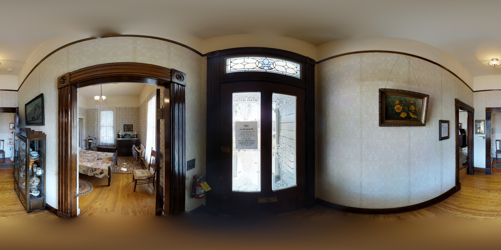
2t7WUuJeko7_27af7fd637014142a4f530cfd45571892t7WUuJeko7 · 06 · 3be66dc4
房间：r5 ｜ 类型：通行与连接 ｜ 门洞：否 ｜ 异常：未见明显异常
原备注：无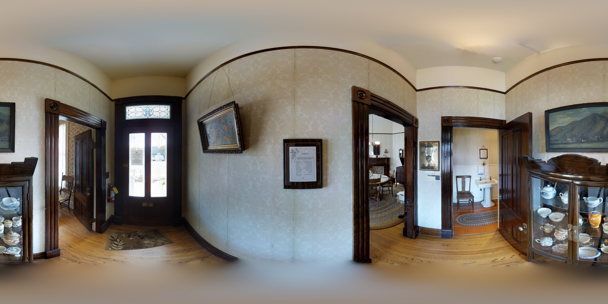
2t7WUuJeko7_3be66dc4f0fb46449d63b07d92c74f3fC002 · 房间编号 · 建议修正
复核判断： 20与22同为r1，但20为木地板、低床头和镜面衣柜，22为地毯、菱格高床头、床头高窗及楼梯侧入口；固定结构也不同。
建议：将这两处卧室分成不同房间ID，再检查r1其余图片。
UwV83HsGsw3 · 20 · cfd92c05
房间：r1 ｜ 类型：卧室 ｜ 门洞：疑似 ｜ 异常：未见明显异常
原备注：无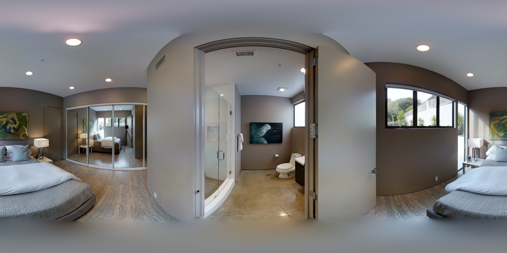
UwV83HsGsw3_cfd92c05e31846e89144f7b2bb8e59a8UwV83HsGsw3 · 22 · f9641b59
房间：r1 ｜ 类型：卧室 ｜ 门洞：疑似 ｜ 异常：未见明显异常
原备注：无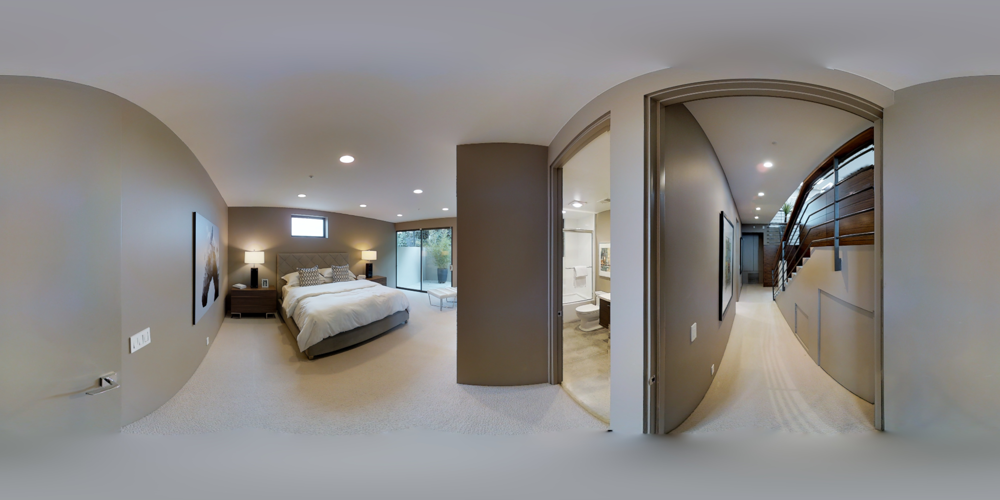
UwV83HsGsw3_f9641b59487a4b0ca0fe41a82edc0980C003 · 房间编号 · 建议修正
复核判断： 03与10都填r2；03床旁为一扇大窗，10为上下两条横窗；床头与开口相对位置也不同，不能只因类似装修合并。
建议：拆分为不同卧室，再分别核对各自相邻视角。
X7HyMhZNoso · 03 · 0e8aea22
房间：r2 ｜ 类型：卧室 ｜ 门洞：否 ｜ 异常：未见明显异常
原备注：无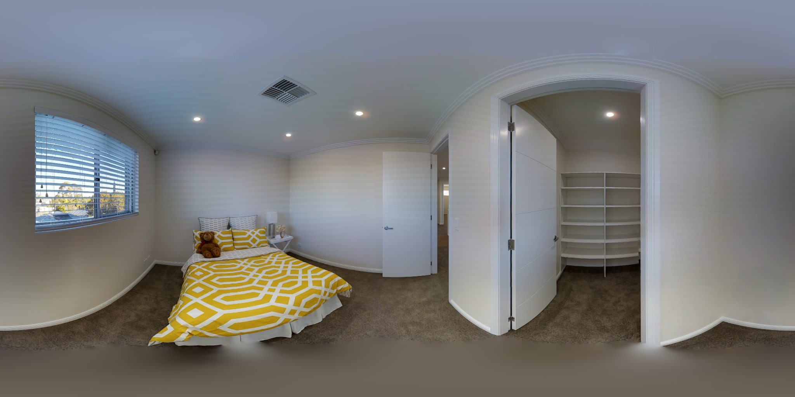
X7HyMhZNoso_0e8aea225d0942f494fd2255f49eb314X7HyMhZNoso · 10 · 3cafb1bf
房间：r2 ｜ 类型：卧室 ｜ 门洞：否 ｜ 异常：未见明显异常
原备注：无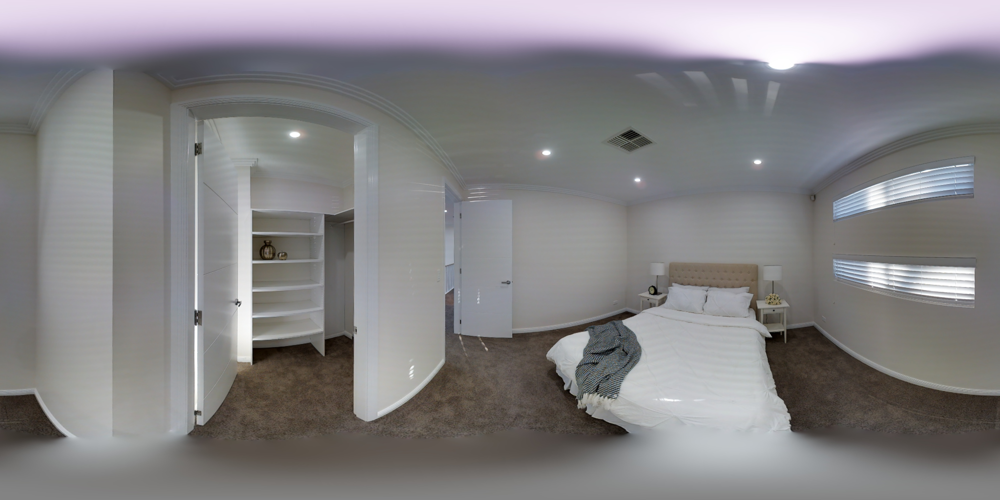
X7HyMhZNoso_3cafb1bfb9084df995fff71810d7693fC004 · 房间编号 · 建议修正
复核判断： 04与01/06都为r1；04的帷幔床在06的门外对面空间可见，而01通过连续两个开口远望该床。相似红色装修覆盖了多个相连房间。
建议：按实际门洞隔开的展室拆分；06与01是否同室也需单独核对。
Z6MFQCViBuw · 04 · 451088e1
房间：r1 ｜ 类型：卧室 ｜ 门洞：否 ｜ 异常：未见明显异常
原备注：无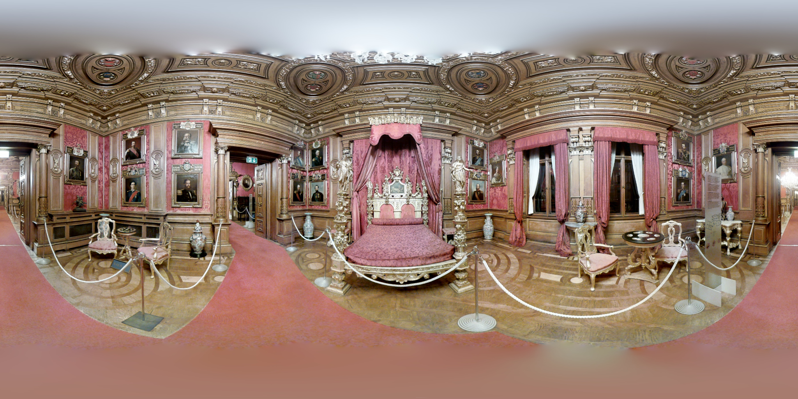
Z6MFQCViBuw_451088e169fd4fe3b14d1f26b18d9a27Z6MFQCViBuw · 01 · 099d792d
房间：r1 ｜ 类型：起居与休闲 ｜ 门洞：否 ｜ 异常：未见明显异常
原备注：无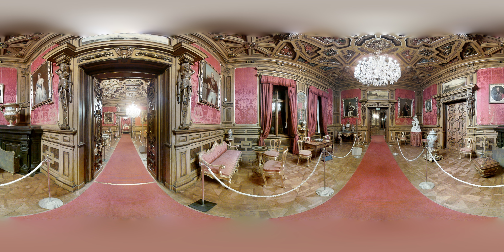
Z6MFQCViBuw_099d792dbfb2402ca355fd7ed860128fZ6MFQCViBuw · 06 · 59aed460
房间：r1 ｜ 类型：起居与休闲 ｜ 门洞：否 ｜ 异常：未见明显异常
原备注：无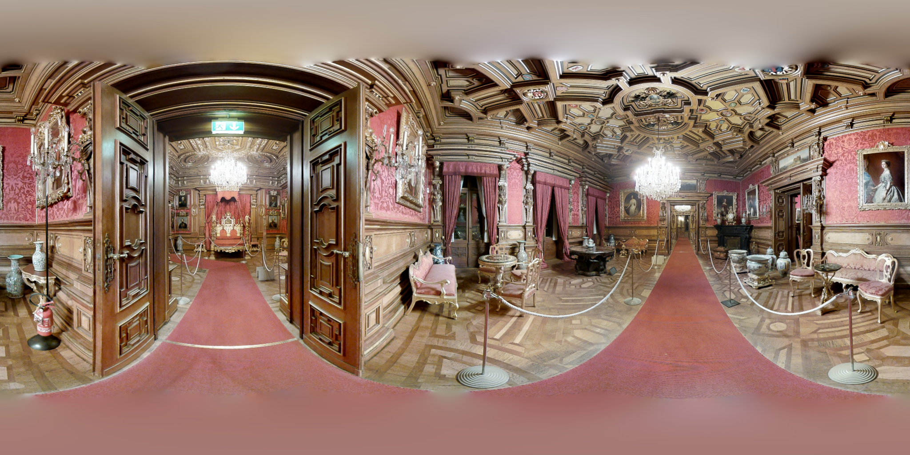
Z6MFQCViBuw_59aed460238643f48f593e9b9ba1c17dC005 · 房间编号 · 建议修正
复核判断： 06与16都填r2；06是粉色双床及紫地毯，16是深木地板、单大床、木质整墙书桌和不同入口布局。
建议：06/12保留同一卧室候选；将16移出这组。
jtcxE69GiFV · 06 · 29d51ea5
房间：r2 ｜ 类型：卧室 ｜ 门洞：否 ｜ 异常：未见明显异常
原备注：房间有点多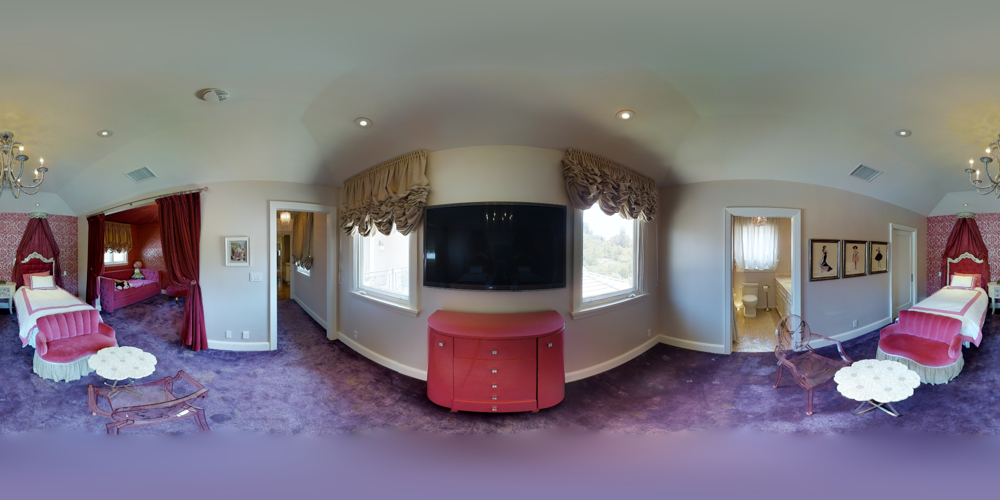
jtcxE69GiFV_29d51ea54a5040098e9b1ba6eaa1f5bdjtcxE69GiFV · 12 · 539fb3f6
房间：r2 ｜ 类型：卧室 ｜ 门洞：确认 ｜ 异常：疑似异常
原备注：不知道这个结构是什么样的 视角畸变有点大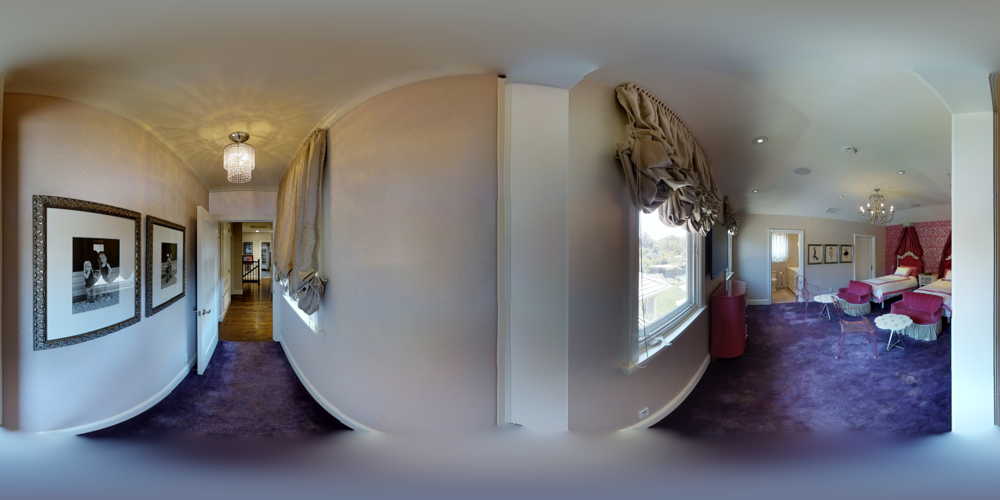
jtcxE69GiFV_539fb3f6f19b442285b593628a8ce14ejtcxE69GiFV · 16 · 666e7c94
房间：r2 ｜ 类型：卧室 ｜ 门洞：否 ｜ 异常：未见明显异常
原备注：无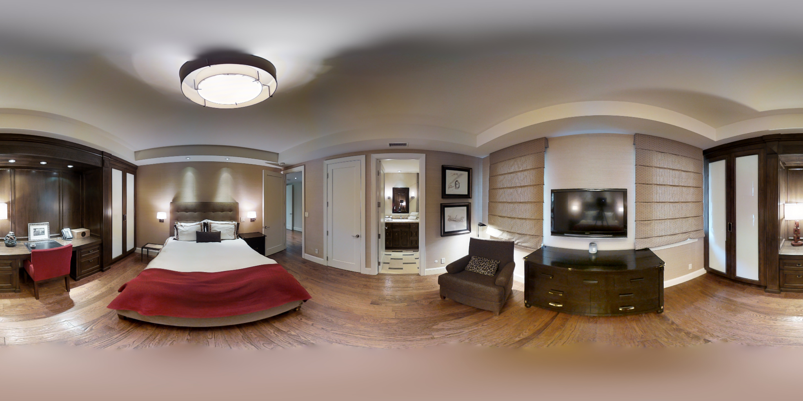
jtcxE69GiFV_666e7c94f27743a788c408a62c2c13f6C006 · 房间编号 · 建议修正
复核判断： 16/22/23分别填r2/r3/r4，但床头、床尾红毯、电视两侧窗、深木整墙书桌及两个入口能逐一对应。
建议：这三张应优先按同一卧室核对，统一房间ID。
jtcxE69GiFV · 16 · 666e7c94
房间：r2 ｜ 类型：卧室 ｜ 门洞：否 ｜ 异常：未见明显异常
原备注：无jtcxE69GiFV_666e7c94f27743a788c408a62c2c13f6jtcxE69GiFV · 22 · 9f0e2562
房间：r3 ｜ 类型：卧室 ｜ 门洞：疑似 ｜ 异常：未见明显异常
原备注：无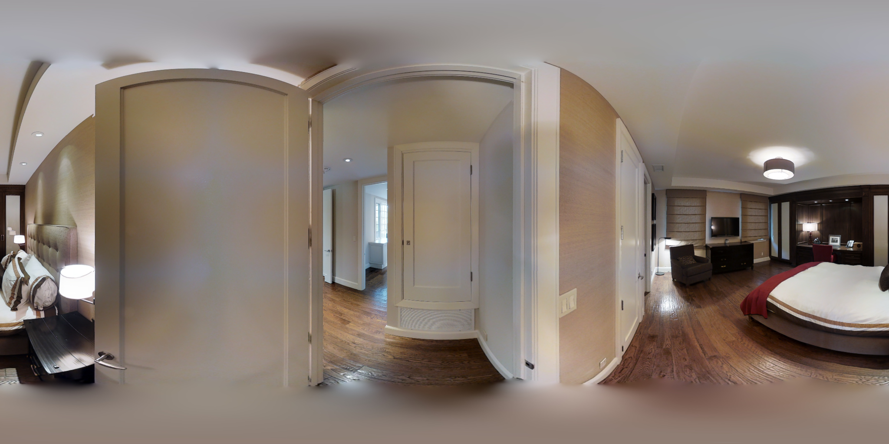
jtcxE69GiFV_9f0e2562fcf447f5a7c5e44e85978148jtcxE69GiFV · 23 · a197694b
房间：r4 ｜ 类型：卧室 ｜ 门洞：疑似 ｜ 异常：未见明显异常
原备注：无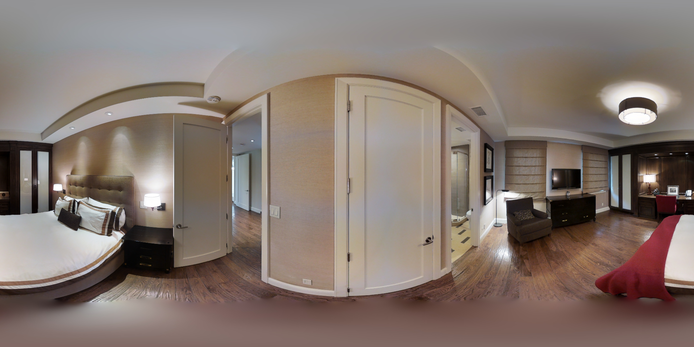
jtcxE69GiFV_a197694b62d249968f88ae32a1b49d10C007 · 房间编号 · 建议修正
复核判断： 19填r5、31填r6；花窗帘、黄床尾、白色衣柜、电视下青色桌及卫浴入口排列一致。
建议：核对后合并为同一房间ID；门洞属性仍逐图填。
jtcxE69GiFV · 19 · 7ca70770
房间：r5 ｜ 类型：卧室 ｜ 门洞：否 ｜ 异常：未见明显异常
原备注：无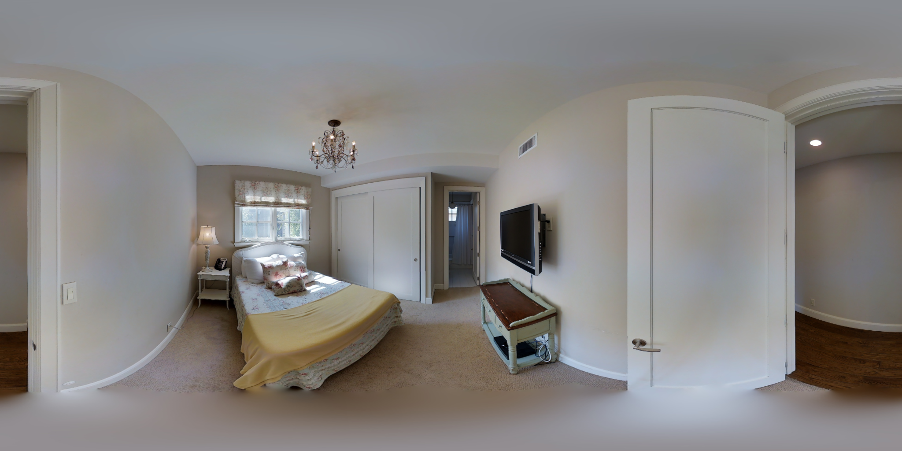
jtcxE69GiFV_7ca707708ef54c5bac2992d05d4f1408jtcxE69GiFV · 31 · f4dc4040
房间：r6 ｜ 类型：卧室 ｜ 门洞：疑似 ｜ 异常：未见明显异常
原备注：无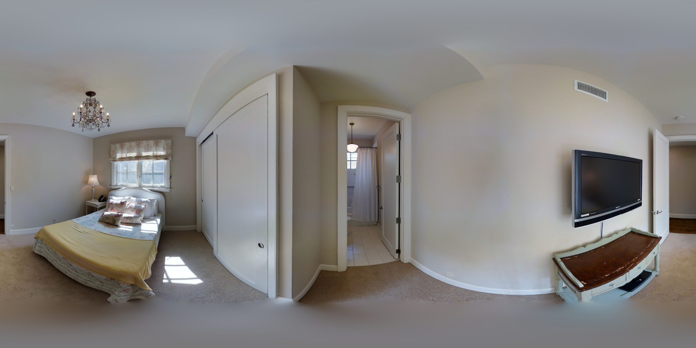
jtcxE69GiFV_f4dc4040df5a4f038dd2b35f2bb65266C008 · 房间编号 · 需确认
复核判断： 与同r1的02相比，29的床头、台灯、座椅和外门相对床的位置不同；两个相似装修卧室可能被合并，亦需排除同大房间不同睡眠区。
建议：并排核实02与29，并检查r1其他图；不能只凭相同配色认定同一物理房间。
uNb9QFRL6hY · 29 · 6115ed70
房间：r1 ｜ 类型：卧室 ｜ 门洞：疑似 ｜ 异常：未见明显异常
原备注：无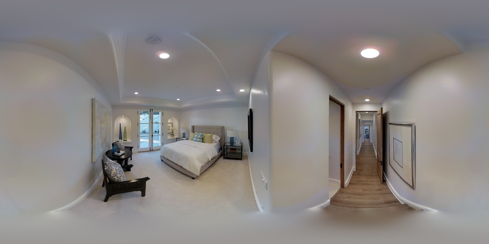
uNb9QFRL6hY_6115ed700b5144cfa3443346381cb7cduNb9QFRL6hY · 02 · 01ea3de3
房间：r1 ｜ 类型：卧室 ｜ 门洞：无法判断 ｜ 异常：未见明显异常
原备注：这个左右两边算不算的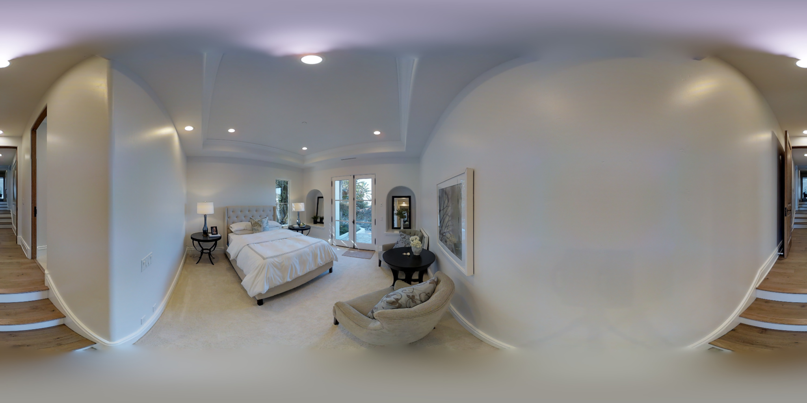
uNb9QFRL6hY_01ea3de3141a4adaa917cebb3db3c086C009 · 房间编号 · 建议修正
复核判断： 同r15的66是厨房/餐厅连接厅，具有宽无门开口和黑色门槛；67是卧室附属小前室，具有窄窗、卫浴木门和衣帽门，空间结构及邻接关系明显不同。
建议：将66与67并排核实，不应仅因都是通行位置共用物理房间编号。
wc2JMjhGNzB · 67 · ec04ef10
房间：r15 ｜ 类型：通行与连接 ｜ 门洞：确认 ｜ 异常：未见明显异常
原备注：无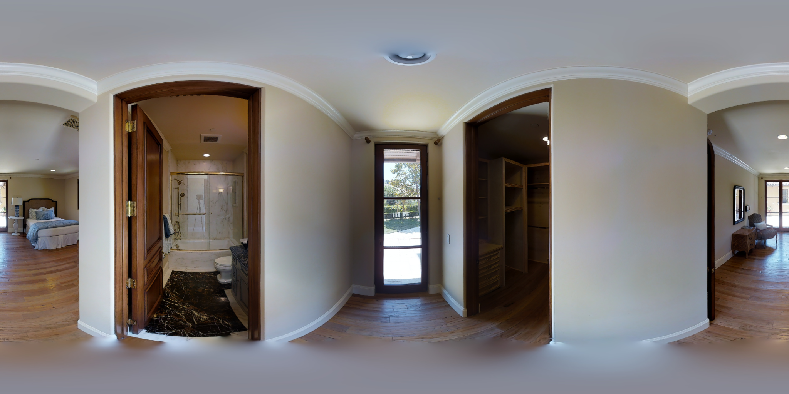
wc2JMjhGNzB_ec04ef10a0664e94878aa2d0f1720c2fwc2JMjhGNzB · 66 · ebf62469
房间：r15 ｜ 类型：通行与连接 ｜ 门洞：确认 ｜ 异常：未见明显异常
原备注：无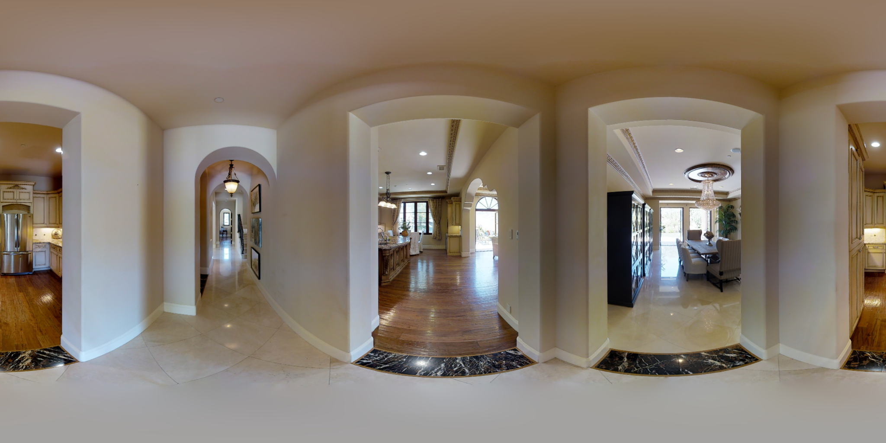
wc2JMjhGNzB_ebf624692bd6472ca94a297ffa1f4c05C010 · 门洞位置 · 建议修正
复核判断：更像非门洞 可见餐厅与厨房间的宽阔柱梁分区；开放分区无清楚门框内定位证据，不宜直接记确认。
建议：按当前严格定义，建议改为否；若只是墙端/开放分区影响，可另记备注。
7y3sRwLe3Va · 18 · a775c766
房间：r4 ｜ 类型：厨房与用餐 ｜ 门洞：确认 ｜ 异常：未见明显异常
原备注：无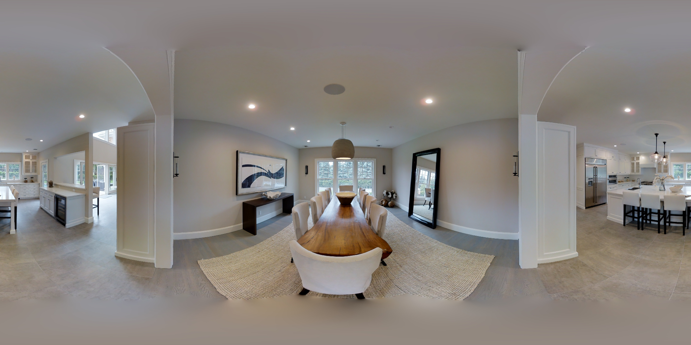
7y3sRwLe3Va_a775c7668ca9419daaf506e76851821eC011 · 门洞位置 · 需确认
复核判断：更像非门洞 相机在卧室前室墙角，真正门洞在前方；墙角分隔不等于门洞中间。
建议：按当前严格定义，建议改为否；若只是墙端/开放分区影响，可另记备注。
7y3sRwLe3Va · 21 · b4747537
房间：r7 ｜ 类型：通行与连接 ｜ 门洞：疑似 ｜ 异常：未见明显异常
原备注：一个拐角拍了两个地方 7y3sRwLe3Va_b47475370e824b9e923a4a96bc98e1e3
7y3sRwLe3Va_b47475370e824b9e923a4a96bc98e1e3C012 · 门洞位置 · 需确认
复核判断：更像非门洞 两个独立门洞均在前方可见完整轮廓，视点更像位于前室。
建议：按当前严格定义，建议改为否；若只是墙端/开放分区影响，可另记备注。
7y3sRwLe3Va · 25 · dfe1f8e8
房间：r7 ｜ 类型：通行与连接 ｜ 门洞：疑似 ｜ 异常：未见明显异常
原备注：无 7y3sRwLe3Va_dfe1f8e8b58d4da49f0c73516e7a4b67
7y3sRwLe3Va_dfe1f8e8b58d4da49f0c73516e7a4b67C013 · 门洞位置 · 需确认
复核判断：更像非门洞 中央是承重圆柱，两侧是不同办公室门口及走廊，不能把柱子当门框。
建议：按当前严格定义，建议改为否；若只是墙端/开放分区影响，可另记备注。
B6ByNegPMKs · 24 · 8b1abc1b
房间：r8 ｜ 类型：通行与连接 ｜ 门洞：疑似 ｜ 异常：未见明显异常
原备注：这个算门框吗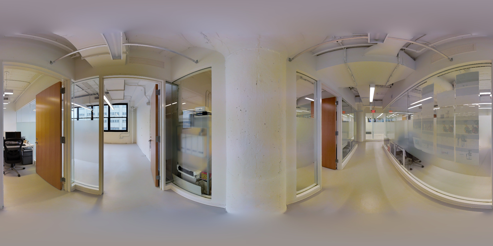
B6ByNegPMKs_8b1abc1b47784d758b9ec1e079160475C014 · 门洞位置 · 建议修正
复核判断：更像非门洞 近处是玻璃隔墙端部和走廊拐角，木门关闭，不支持相机处于该门洞内。
建议：按当前严格定义，建议改为否；若只是墙端/开放分区影响，可另记备注。
B6ByNegPMKs · 32 · b5dcbc01
房间：r10 ｜ 类型：通行与连接 ｜ 门洞：确认 ｜ 异常：未见明显异常
原备注：无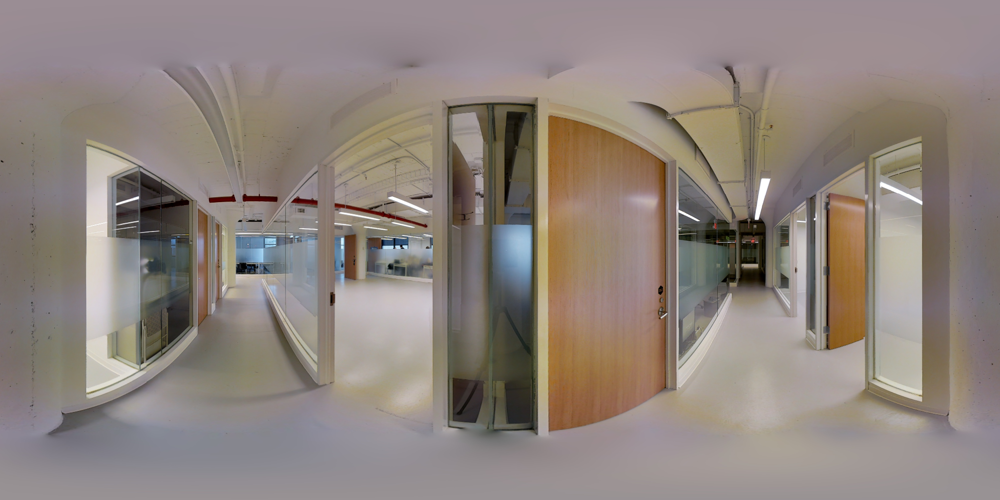
B6ByNegPMKs_b5dcbc0109a344a281d8ae467ccf3fc2C015 · 门洞位置 · 建议修正
复核判断：更像非门洞 红色楼梯门关闭，中央为柜体端部；视点在走廊内，不在门洞内。
建议：按当前严格定义，建议改为否；若只是墙端/开放分区影响，可另记备注。
B6ByNegPMKs · 47 · e26e2cb7
房间：r13 ｜ 类型：通行与连接 ｜ 门洞：确认 ｜ 异常：未见明显异常
原备注：无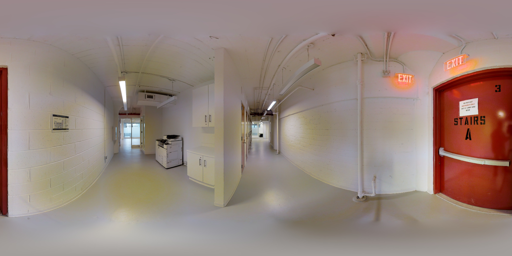
B6ByNegPMKs_e26e2cb761894264a4a34b1046701f6bC016 · 门洞位置 · 需确认
复核判断：更像非门洞 从卧室内部看向完整门洞，门前地面可见，缺少门洞内定位证据。
建议：按当前严格定义，建议改为否；若只是墙端/开放分区影响，可另记备注。
S9hNv5qa7GM · 03 · 27869fb0
房间：r1 ｜ 类型：卧室 ｜ 门洞：疑似 ｜ 异常：未见明显异常
原备注：无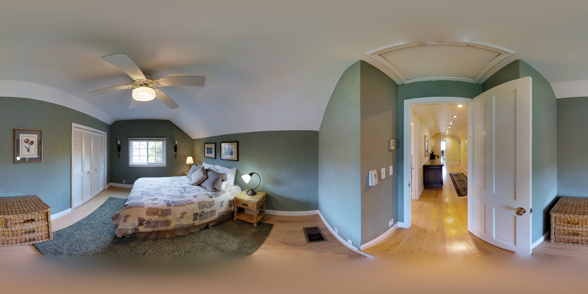
S9hNv5qa7GM_27869fb0e3414f2687b9580b335ec615C017 · 门洞位置 · 需确认
复核判断：更像非门洞 开放厨房与起居区，无门框内定位证据；原备注不是门框但有效果不应混入门洞类别。
建议：按当前严格定义，建议改为否；若只是墙端/开放分区影响，可另记备注。
UwV83HsGsw3 · 03 · 16af5254
房间：r3 ｜ 类型：厨房与用餐 ｜ 门洞：疑似 ｜ 异常：未见明显异常
原备注：不是门框但是有那个效果 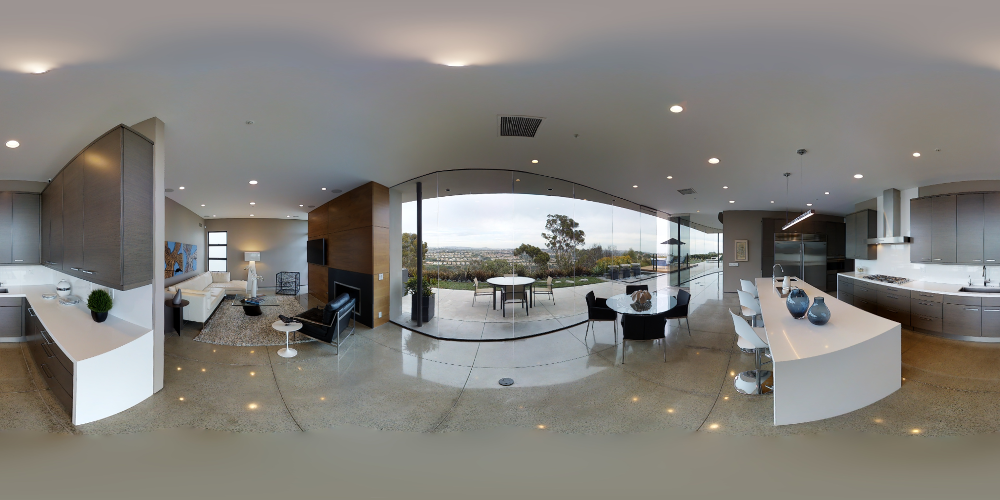
UwV83HsGsw3_16af52545aff47afb4d7b330a49091a2C018 · 门洞位置 · 需确认
复核判断：更像非门洞 近处是厨房岛台和柜墙，玻璃外门在前方，开放分区不同于门洞中间。
建议：按当前严格定义，建议改为否；若只是墙端/开放分区影响，可另记备注。
UwV83HsGsw3 · 06 · 528d342b
房间：r4 ｜ 类型：厨房与用餐 ｜ 门洞：疑似 ｜ 异常：未见明显异常
原备注：不是门框但是有那个效果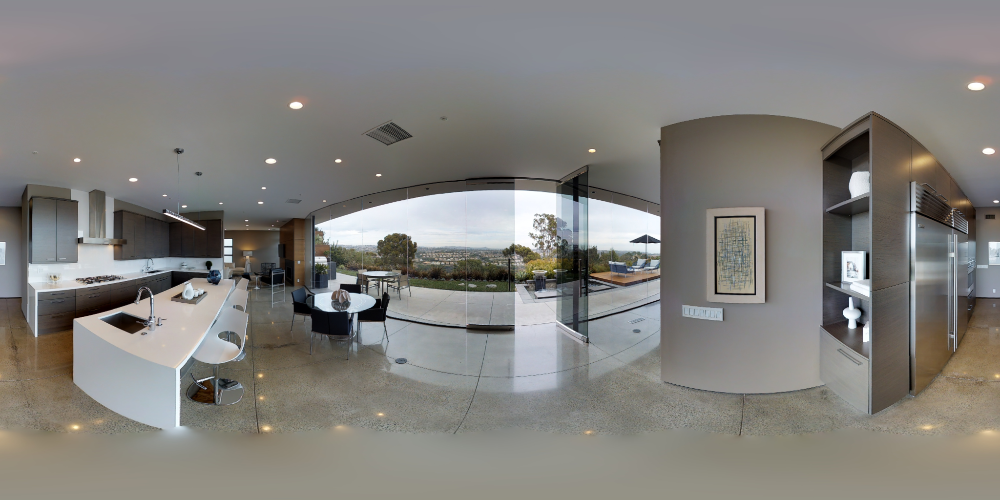
UwV83HsGsw3_528d342bf5494b3b94983545d6a1a282C019 · 门洞位置 · 需确认
复核判断：更像非门洞 相机在沙发和壁炉旁，木饰面为电视/壁炉隔墙，不是门框。
建议：按当前严格定义，建议改为否；若只是墙端/开放分区影响，可另记备注。
UwV83HsGsw3 · 16 · b9795264
房间：r3 ｜ 类型：起居与休闲 ｜ 门洞：疑似 ｜ 异常：未见明显异常
原备注：不是门框但是有那个效果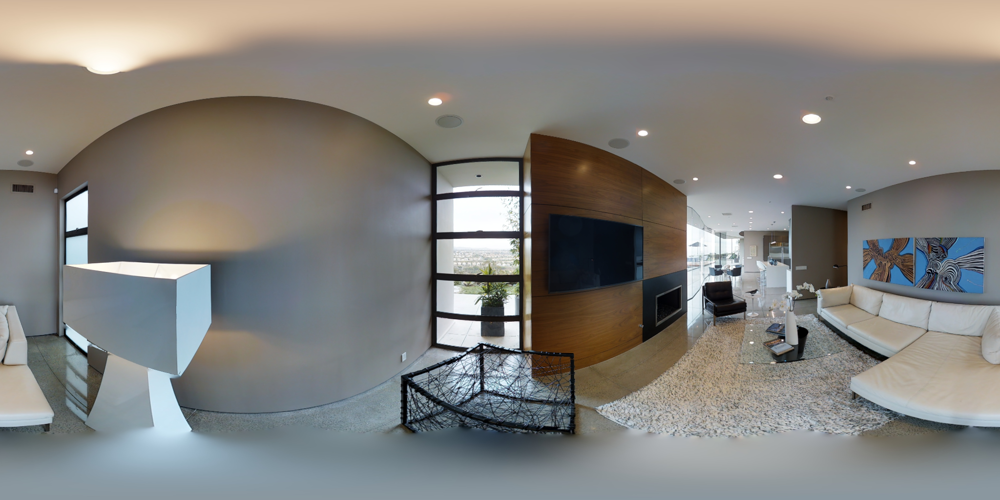
UwV83HsGsw3_b979526475874ad68ae33f02d407a1fcC020 · 门洞位置 · 需确认
复核判断：更像非门洞 完整卫浴门框位于视点前方，床和卧室地面环绕，相机更像在卧室内靠门。
建议：按当前严格定义，建议改为否；若只是墙端/开放分区影响，可另记备注。
UwV83HsGsw3 · 20 · cfd92c05
房间：r1 ｜ 类型：卧室 ｜ 门洞：疑似 ｜ 异常：未见明显异常
原备注：无UwV83HsGsw3_cfd92c05e31846e89144f7b2bb8e59a8C021 · 门洞位置 · 需确认
复核判断：更像非门洞 从卧室内看向卫浴及走廊两个完整入口；两个入口不能当作同一门框的两侧。
建议：按当前严格定义，建议改为否；若只是墙端/开放分区影响，可另记备注。
UwV83HsGsw3 · 22 · f9641b59
房间：r1 ｜ 类型：卧室 ｜ 门洞：疑似 ｜ 异常：未见明显异常
原备注：无UwV83HsGsw3_f9641b59487a4b0ca0fe41a82edc0980C022 · 门洞位置 · 需确认
复核判断：更像非门洞 近处是墙端和开放起居过道，没有同一门框两侧的定位线索。
建议：按当前严格定义，建议改为否；若只是墙端/开放分区影响，可另记备注。
UwV83HsGsw3 · 23 · fcd79f4b
房间：r3 ｜ 类型：起居与休闲 ｜ 门洞：疑似 ｜ 异常：未见明显异常
原备注：不是门框但是有那个效果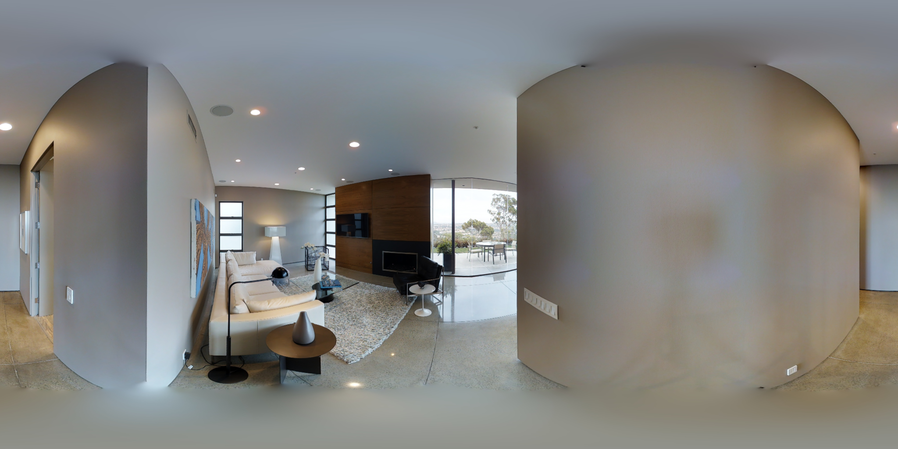
UwV83HsGsw3_fcd79f4b6a6642e99227caffb51bf407C023 · 门洞位置 · 需确认
复核判断：更像非门洞 近景为楼梯平台立柱及墙端，真正的卧室门洞在左前方完整可见。
建议：按当前严格定义，建议改为否；若只是墙端/开放分区影响，可另记备注。
X7HyMhZNoso · 01 · 05954776
房间：r8 ｜ 类型：通行与连接 ｜ 门洞：疑似 ｜ 异常：未见明显异常
原备注：支撑柱子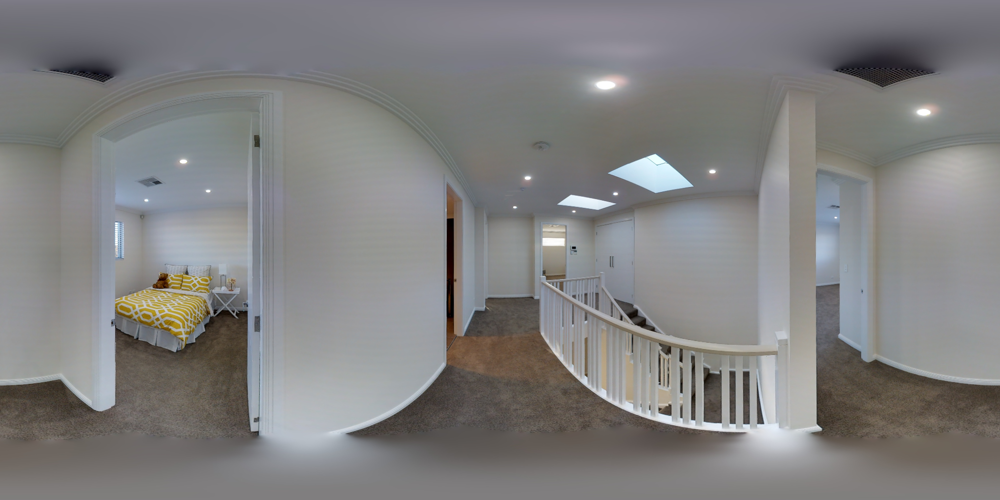
X7HyMhZNoso_0595477618f44940b004970372df16dcC024 · 门洞位置 · 建议修正
复核判断：更像非门洞 衣帽入口的完整门框在正前方，相机更像在卧室床旁，而不是门洞内。
建议：按当前严格定义，建议改为否；若只是墙端/开放分区影响，可另记备注。
X7HyMhZNoso · 02 · 0e0c08b7
房间：r1 ｜ 类型：卧室 ｜ 门洞：确认 ｜ 异常：未见明显异常
原备注：无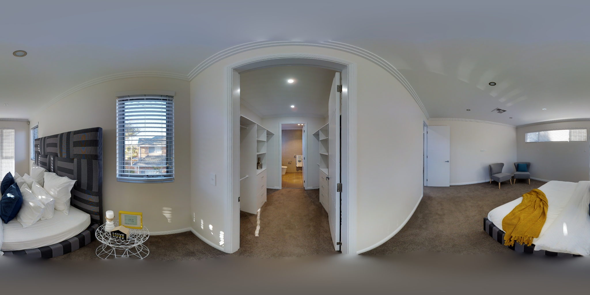
X7HyMhZNoso_0e0c08b705704f80b5f31c2bd3a40583C025 · 门洞位置 · 建议修正
复核判断：更像非门洞 卧室门洞完整位于前方，视点在床旁；靠门不等于门洞内。
建议：按当前严格定义，建议改为否；若只是墙端/开放分区影响，可另记备注。
b8cTxDM8gDG · 02 · 12fc603c
房间：r1 ｜ 类型：卧室 ｜ 门洞：确认 ｜ 异常：未见明显异常
原备注：无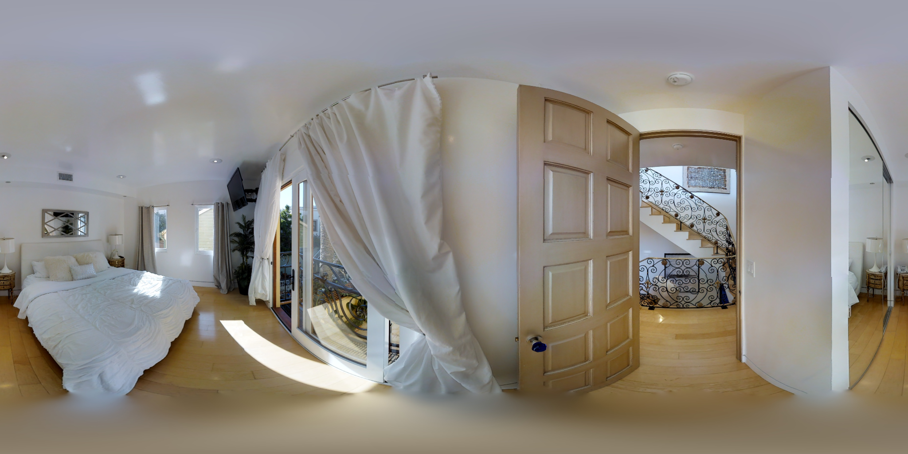
b8cTxDM8gDG_12fc603ce4bc4cbd81c704e630f130bdC026 · 门洞位置 · 需确认
复核判断：更像非门洞 走廊内的近墙视点，两端可见门口但不是同一开口两侧。
建议：按当前严格定义，建议改为否；若只是墙端/开放分区影响，可另记备注。
b8cTxDM8gDG · 06 · 3892d409
房间：r11 ｜ 类型：通行与连接 ｜ 门洞：疑似 ｜ 异常：未见明显异常
原备注：无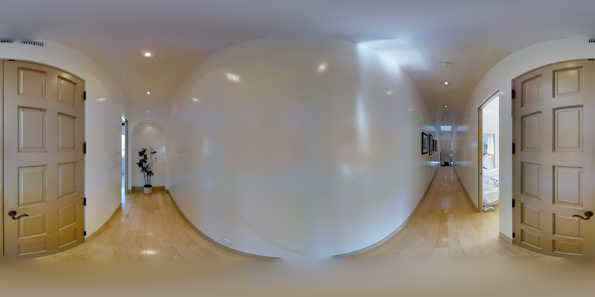
b8cTxDM8gDG_3892d409b66644439f5afcf3d296efbfC027 · 门洞位置 · 需确认
复核判断：更像非门洞 相机在楼梯平台，玻璃门及健身区开放入口位于前方。
建议：按当前严格定义，建议改为否；若只是墙端/开放分区影响，可另记备注。
b8cTxDM8gDG · 13 · d38c4ae9
房间：r13 ｜ 类型：复合／待定 ｜ 门洞：疑似 ｜ 异常：未见明显异常
原备注：门框分割出来的房间有点多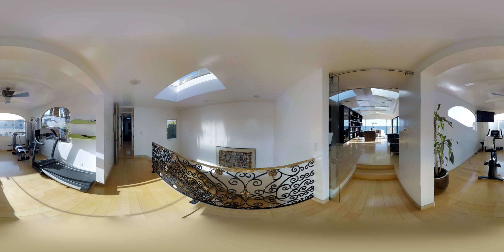
b8cTxDM8gDG_d38c4ae95f5b4640a2696b923b80d1f4C028 · 门洞位置 · 需确认
复核判断：更像非门洞 相机在小卧室床旁，连通另一卧室的入口在前方；一侧关闭门也不支持门洞内。
建议：按当前严格定义，建议改为否；若只是墙端/开放分区影响，可另记备注。
b8cTxDM8gDG · 14 · d6f573aa
房间：r3 ｜ 类型：卧室 ｜ 门洞：疑似 ｜ 异常：未见明显异常
原备注：无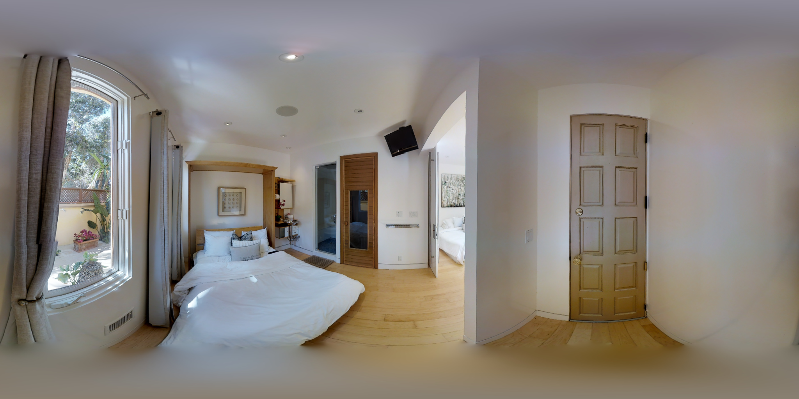
b8cTxDM8gDG_d6f573aa1add4621af53ba492838ff45C029 · 门洞位置 · 需确认
复核判断：更像非门洞 相机在双洗手台前，两侧是分别通向走廊和卧室的两个入口。
建议：按当前严格定义，建议改为否；若只是墙端/开放分区影响，可另记备注。
b8cTxDM8gDG · 15 · dcbdda42
房间：r6 ｜ 类型：卫浴 ｜ 门洞：疑似 ｜ 异常：未见明显异常
原备注：玻璃隔断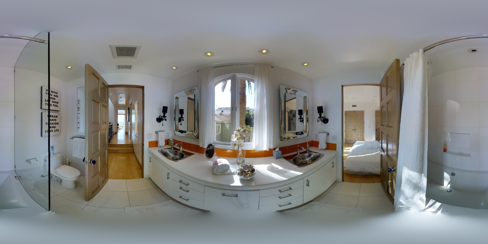
b8cTxDM8gDG_dcbdda428eb846a586886b87d9552d0eC030 · 门洞位置 · 需确认
复核判断：更像非门洞 厨房柜体端部和开放餐区分界，不是明确门框。
建议：按当前严格定义，建议改为否；若只是墙端/开放分区影响，可另记备注。
e9zR4mvMWw7 · 13 · 2224be23
房间：r12 ｜ 类型：厨房与用餐 ｜ 门洞：疑似 ｜ 异常：未见明显异常
原备注：这个算框吗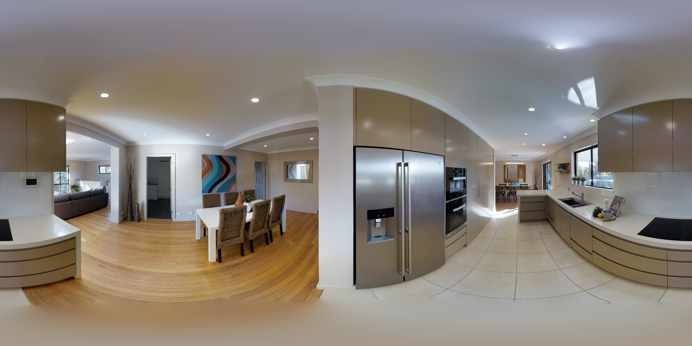
e9zR4mvMWw7_2224be23a70a475ea6daa55d4c90a91bC031 · 门洞位置 · 需确认
复核判断：更像非门洞 厨房隔墙端部与开放客餐厅，没有同一门洞两侧线索。
建议：按当前严格定义，建议改为否；若只是墙端/开放分区影响，可另记备注。
e9zR4mvMWw7 · 38 · f6c327ac
房间：r13 ｜ 类型：厨房与用餐 ｜ 门洞：疑似 ｜ 异常：未见明显异常
原备注：这个算不算厚一点的门框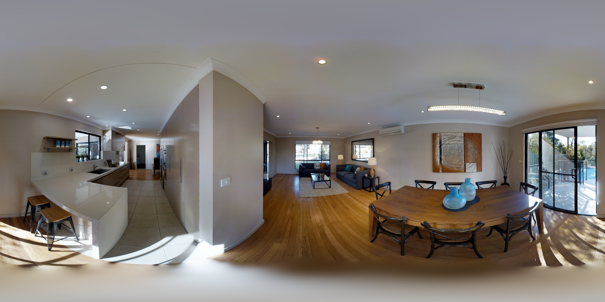
e9zR4mvMWw7_f6c327acf9884d988714467217d67dcdC032 · 门洞位置 · 建议修正
复核判断：更像非门洞 完整出入口位于卫浴前方，相机更像在卫浴内部。
建议：按当前严格定义，建议改为否；若只是墙端/开放分区影响，可另记备注。
jh4fc5c5qoQ · 01 · 1eac2c37
房间：r4 ｜ 类型：卫浴 ｜ 门洞：确认 ｜ 异常：未见明显异常
原备注：无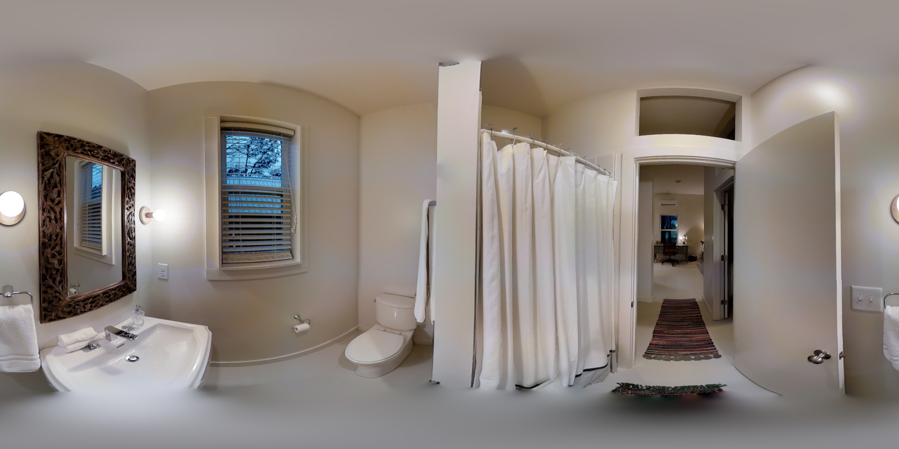
jh4fc5c5qoQ_1eac2c379ebf4e059f4a35e584f82f9bC033 · 门洞位置 · 需确认
复核判断：更像非门洞 卫浴门框完整在前方，左右洗手台和坐便器说明视点仍偏卫浴内。
建议：按当前严格定义，建议改为否；若只是墙端/开放分区影响，可另记备注。
jh4fc5c5qoQ · 06 · 5ce75bcc
房间：r3 ｜ 类型：卫浴 ｜ 门洞：疑似 ｜ 异常：未见明显异常
原备注：无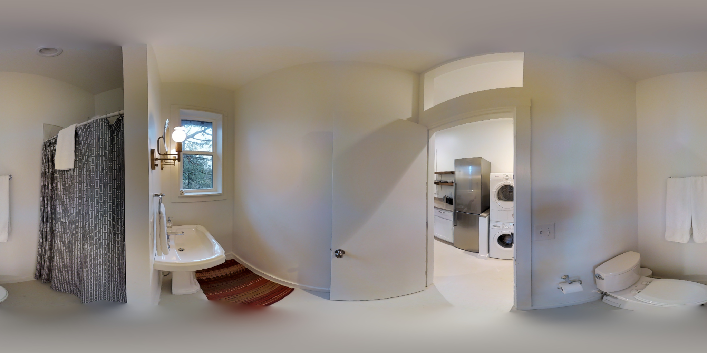
jh4fc5c5qoQ_5ce75bcca20d46a8adba099e08a36c8eC034 · 门洞位置 · 需确认
复核判断：更像非门洞 与06类似，从卫浴内部正看入口，缺少门洞内位置证据。
建议：按当前严格定义，建议改为否；若只是墙端/开放分区影响，可另记备注。
jh4fc5c5qoQ · 12 · a59a3a61
房间：r3 ｜ 类型：卫浴 ｜ 门洞：疑似 ｜ 异常：未见明显异常
原备注：无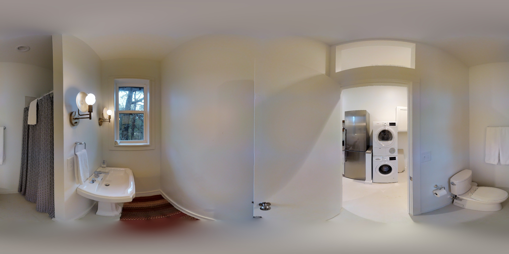
jh4fc5c5qoQ_a59a3a61089343a8ba2834e7d3cd1066C035 · 门洞位置 · 需确认
复核判断：更像非门洞 视点在走廊与关闭壁柜门旁，卧室入口位于接缝方向；不能把柜门当交界。
建议：按当前严格定义，建议改为否；若只是墙端/开放分区影响，可另记备注。
jtcxE69GiFV · 11 · 4d7ce55e
房间：r17 ｜ 类型：通行与连接 ｜ 门洞：疑似 ｜ 异常：未见明显异常
原备注：无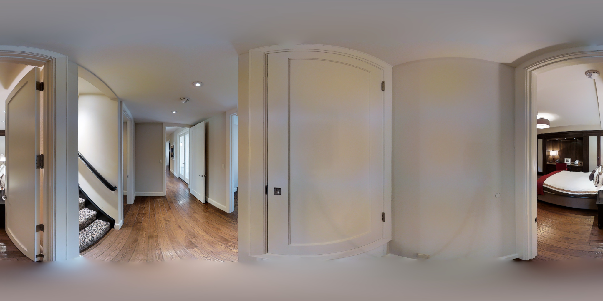
jtcxE69GiFV_4d7ce55eeb6643079aba3b10360de8d8C036 · 门洞位置 · 需确认
复核判断：证据不足 厕间双扇玻璃门很近，但开口完整轮廓仍在前方，更像门外或偏外，确认依据不足。
建议：保留疑似或无法判断；需要额外定位证据才能确认门洞中间。
jtcxE69GiFV · 15 · 650dbde3
房间：r9 ｜ 类型：卫浴 ｜ 门洞：确认 ｜ 异常：未见明显异常
原备注：无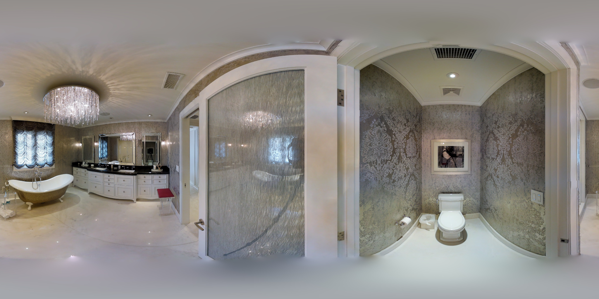
jtcxE69GiFV_650dbde3bd124db1bf8393250eda52eaC037 · 门洞位置 · 需确认
复核判断：证据不足 卧室与走廊门口很近，完整门框在前方，不能确认相机正处门洞中间。
建议：保留疑似或无法判断；需要额外定位证据才能确认门洞中间。
jtcxE69GiFV · 17 · 6723e182
房间：r1 ｜ 类型：卧室 ｜ 门洞：确认 ｜ 异常：未见明显异常
原备注：无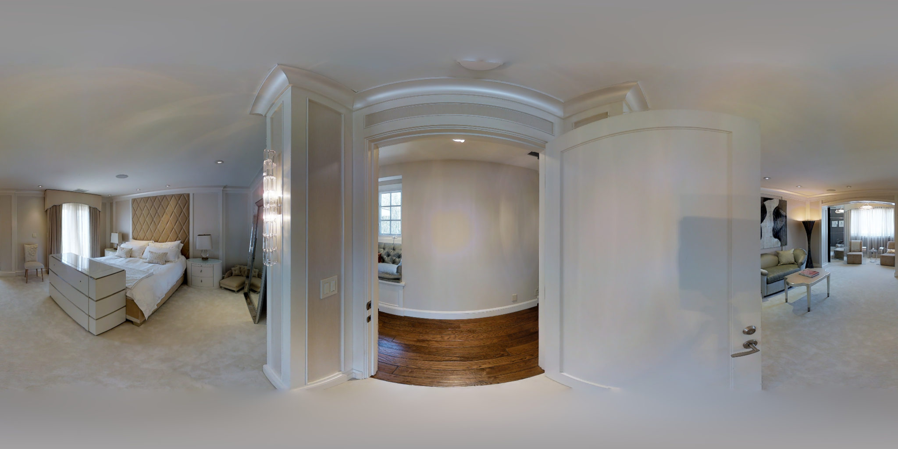
jtcxE69GiFV_6723e18211d244f8b17ced91aae64d99C038 · 门洞位置 · 需确认
复核判断：更像非门洞 视点在床、壁柜和电视间，两个入口位于前方，非门洞内线索。
建议：按当前严格定义，建议改为否；若只是墙端/开放分区影响，可另记备注。
jtcxE69GiFV · 23 · a197694b
房间：r4 ｜ 类型：卧室 ｜ 门洞：疑似 ｜ 异常：未见明显异常
原备注：无jtcxE69GiFV_a197694b62d249968f88ae32a1b49d10C039 · 门洞位置 · 需确认
复核判断：更像非门洞 位于卧室电视与衣柜旁，卫浴完整入口在前方。
建议：按当前严格定义，建议改为否；若只是墙端/开放分区影响，可另记备注。
jtcxE69GiFV · 31 · f4dc4040
房间：r6 ｜ 类型：卧室 ｜ 门洞：疑似 ｜ 异常：未见明显异常
原备注：无jtcxE69GiFV_f4dc4040df5a4f038dd2b35f2bb65266C040 · 门洞位置 · 需确认
复核判断：证据不足 卫浴与卧室同时可见，但卫浴开口仍在前方；双空间可见不足确认相机在门洞内。 单张RGB不能确认厘米级精确中心。
建议：保留疑似或无法判断；需要额外定位证据才能确认门洞中间。
pRbA3pwrgk9 · 01 · 0350fc96
房间：r2 ｜ 类型：卫浴 ｜ 门洞：确认 ｜ 异常：未见明显异常
原备注：无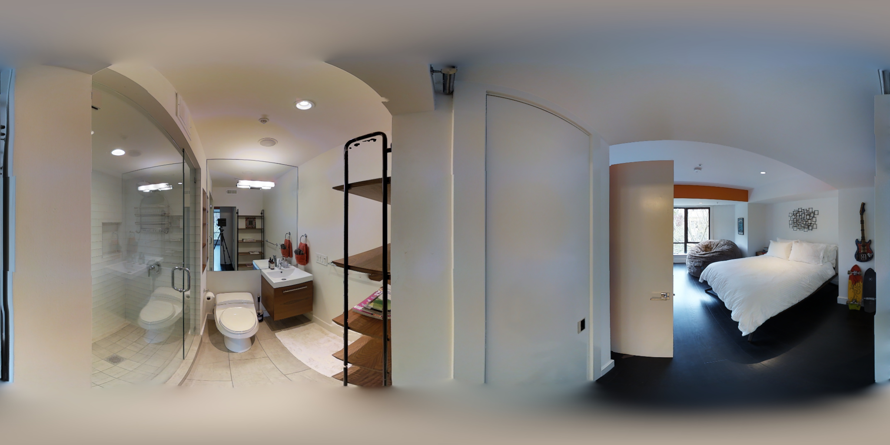
pRbA3pwrgk9_0350fc96e88c4a52886d4eb50b2d52c6C041 · 门洞位置 · 建议修正
复核判断：更像非门洞 卫浴双扇门完整正面可见，前方还有卧室侧地面；更像门外朝门拍摄。 单张RGB不能确认厘米级精确中心。
建议：按当前严格定义，建议改为否；若只是墙端/开放分区影响，可另记备注。
pRbA3pwrgk9 · 03 · 05c49a8b
房间：r10 ｜ 类型：复合／待定 ｜ 门洞：确认 ｜ 异常：未见明显异常
原备注：无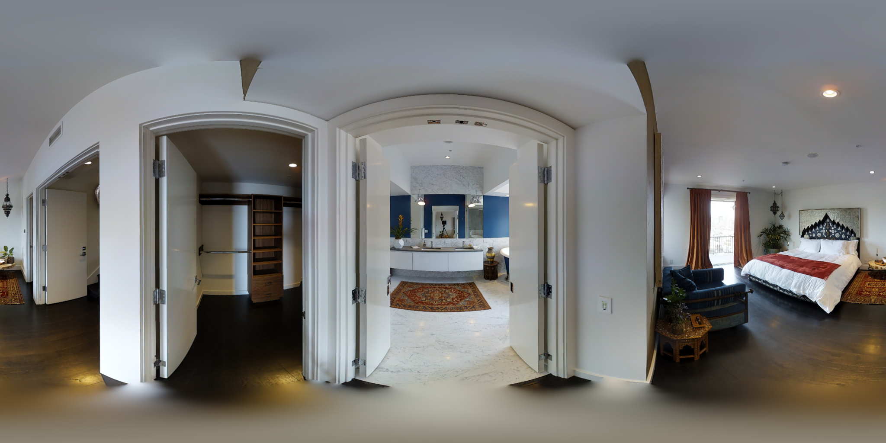
pRbA3pwrgk9_05c49a8b61034633ad57ae3527dac65dC042 · 门洞位置 · 需确认
复核判断：证据不足 滑门洞完整位于一侧；镜中相机靠入口，但无法确认门洞内位置。 单张RGB不能确认厘米级精确中心。
建议：保留疑似或无法判断；需要额外定位证据才能确认门洞中间。
pRbA3pwrgk9 · 16 · bc9ae898
房间：r2 ｜ 类型：卫浴 ｜ 门洞：确认 ｜ 异常：未见明显异常
原备注：无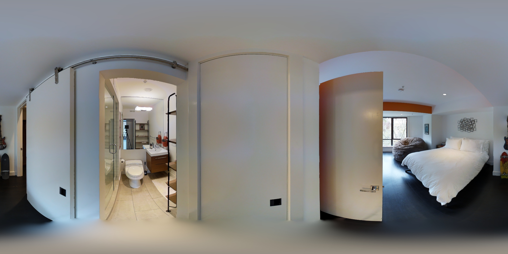
pRbA3pwrgk9_bc9ae89832854c19a69741f97291efadC043 · 门洞位置 · 需确认
复核判断：更像非门洞 阳台门框及门槛完整在前方，室内地面延伸至门槛，更像卧室内靠门。 单张RGB不能确认厘米级精确中心。
建议：按当前严格定义，建议改为否；若只是墙端/开放分区影响，可另记备注。
pRbA3pwrgk9 · 18 · e0dc27df
房间：r1 ｜ 类型：卧室 ｜ 门洞：疑似 ｜ 异常：未见明显异常
原备注：无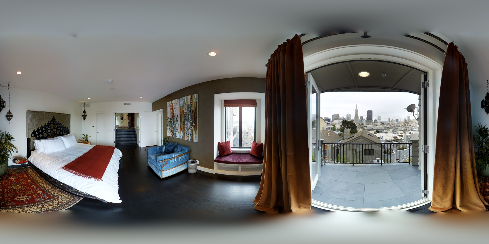
pRbA3pwrgk9_e0dc27df8b2d4484bde0f97284d4cdf7C044 · 门洞位置 · 需确认
复核判断：更像非门洞 洗衣/楼梯前室内，卫浴门框在前方且有地面间隔；多方向连通非门洞内。 单张RGB不能确认厘米级精确中心。
建议：按当前严格定义，建议改为否；若只是墙端/开放分区影响，可另记备注。
pa4otMbVnkk · 08 · 42218dac
房间：r20 ｜ 类型：通行与连接 ｜ 门洞：疑似 ｜ 异常：未见明显异常
原备注：无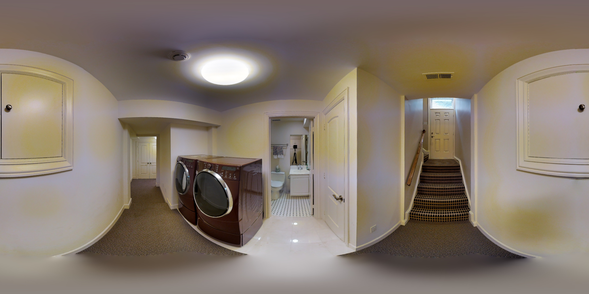
pa4otMbVnkk_42218dacb31045bfbc70cd57d1b69a84C045 · 门洞位置 · 需确认
复核判断：更像非门洞 拱形前室入口整体在相机前方，卧室地面延伸至入口，不支持实际房门内。 单张RGB不能确认厘米级精确中心。
建议：按当前严格定义，建议改为否；若只是墙端/开放分区影响，可另记备注。
pa4otMbVnkk · 11 · 4fbdfc08
房间：r3 ｜ 类型：卧室 ｜ 门洞：疑似 ｜ 异常：未见明显异常
原备注：无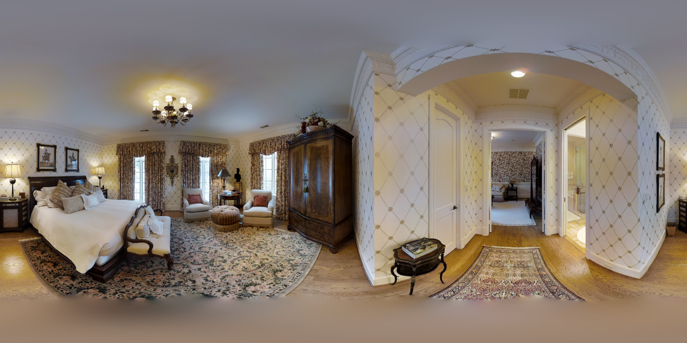
pa4otMbVnkk_4fbdfc08c934474ea9a04977f9081d0eC046 · 门洞位置 · 需确认
复核判断：证据不足 左右门框完整包围前方房间，近门线索强，但不足确认门洞中心。 单张RGB不能确认厘米级精确中心。
建议：保留疑似或无法判断；需要额外定位证据才能确认门洞中间。
pa4otMbVnkk · 14 · 5d1adb54
房间：r23 ｜ 类型：复合／待定 ｜ 门洞：确认 ｜ 异常：未见明显异常
原备注：无pa4otMbVnkk_5d1adb544bb14217ba5ded2eb82cd8e3C047 · 门洞位置 · 需确认
复核判断：更像非门洞 相机在绿色卫浴内，亮色走廊门框在右前方，不支持门洞中间。 单张RGB不能确认厘米级精确中心。
建议：按当前严格定义，建议改为否；若只是墙端/开放分区影响，可另记备注。
pa4otMbVnkk · 24 · 8370daae
房间：r8 ｜ 类型：卫浴 ｜ 门洞：疑似 ｜ 异常：未见明显异常
原备注：无pa4otMbVnkk_8370daaebb5145ee80f7e362fabc9d5bC048 · 门洞位置 · 需确认
复核判断：更像非门洞 多个门交汇的走廊位置，卧室和长廊入口完整在前方。 单张RGB不能确认厘米级精确中心。
建议：按当前严格定义，建议改为否；若只是墙端/开放分区影响，可另记备注。
pa4otMbVnkk · 36 · b2bb0d47
房间：r19 ｜ 类型：通行与连接 ｜ 门洞：疑似 ｜ 异常：未见明显异常
原备注：无pa4otMbVnkk_b2bb0d47721a4f24af2c829bba560aa6C049 · 门洞位置 · 需确认
复核判断：证据不足 卫浴完整门框占左侧，卧室占右侧，镜中相机靠入口；不足确认正中间。 单张RGB不能确认厘米级精确中心。
建议：保留疑似或无法判断；需要额外定位证据才能确认门洞中间。
pa4otMbVnkk · 39 · d0777438
房间：r5 ｜ 类型：卧室 ｜ 门洞：确认 ｜ 异常：未见明显异常
原备注：无pa4otMbVnkk_d0777438896f4ba59dc36ba96ebb003fC050 · 门洞位置 · 需确认
复核判断：证据不足 近处白墙连接卧室与前室，缺少同一门洞双侧门框；需区分无门宽开口与实际门。 单张RGB不能确认厘米级精确中心。
建议：保留疑似或无法判断；需要额外定位证据才能确认门洞中间。
q9vSo1VnCiC · 13 · 9c9fb1fc
房间：r9 ｜ 类型：通行与连接 ｜ 门洞：确认 ｜ 异常：未见明显异常
原备注：无q9vSo1VnCiC_9c9fb1fccf4e46a597a9510a1938c8b4C051 · 门洞位置 · 需确认
复核判断：证据不足 两个前室连接开口附近，实际棕色门洞偏右前方，不能将宽开口交界当门中心。 单张RGB不能确认厘米级精确中心。
建议：保留疑似或无法判断；需要额外定位证据才能确认门洞中间。
q9vSo1VnCiC · 18 · a823913d
房间：r11 ｜ 类型：通行与连接 ｜ 门洞：确认 ｜ 异常：未见明显异常
原备注：无q9vSo1VnCiC_a823913d661144d4ad3d609e1e085fb1C052 · 门洞位置 · 需确认
复核判断：证据不足 书桌凹区与卧室由无门宽开口连接；棕色滑门属于侧旁卫浴，需明确指哪个门。 单张RGB不能确认厘米级精确中心。
建议：保留疑似或无法判断；需要额外定位证据才能确认门洞中间。
q9vSo1VnCiC · 22 · bac003e7
房间：r1 ｜ 类型：卧室 ｜ 门洞：确认 ｜ 异常：未见明显异常
原备注：无q9vSo1VnCiC_bac003e7f0294457905fb183c34ef2bfC053 · 门洞位置 · 需确认
复核判断：更像非门洞 露台推拉门和白色门槛完整在前方，室内地砖延伸至门槛，较像门内侧靠门。 单张RGB不能确认厘米级精确中心。
建议：按当前严格定义，建议改为否；若只是墙端/开放分区影响，可另记备注。
q9vSo1VnCiC · 25 · ca6944f5
房间：r1 ｜ 类型：卧室 ｜ 门洞：疑似 ｜ 异常：未见明显异常
原备注：无q9vSo1VnCiC_ca6944f5dd334193bb86058ba5ab5dc3C054 · 门洞位置 · 建议修正
复核判断：更像非门洞 卧室门框完整在前方，左右长走廊连续可见，较像站走廊门外。 单张RGB不能确认厘米级精确中心。
建议：按当前严格定义，建议改为否；若只是墙端/开放分区影响，可另记备注。
rPc6DW4iMge · 18 · bad24c9d
房间：r7 ｜ 类型：通行与连接 ｜ 门洞：确认 ｜ 异常：未见明显异常
原备注：无rPc6DW4iMge_bad24c9d90de493eb70e9af8383ee598C055 · 门洞位置 · 建议修正
复核判断：更像非门洞 卫浴门框完整在前方，左右同条走廊；正对门不等于处于门洞。 单张RGB不能确认厘米级精确中心。
建议：按当前严格定义，建议改为否；若只是墙端/开放分区影响，可另记备注。
rPc6DW4iMge · 20 · cc15fb10
房间：r7 ｜ 类型：通行与连接 ｜ 门洞：确认 ｜ 异常：未见明显异常
原备注：无rPc6DW4iMge_cc15fb105d86466faafdd633f89148deC056 · 门洞位置 · 需确认
复核判断：更像非门洞 近处为无门大开口及台阶，真正棕色门框在台阶更远处；左右接缝属同一方向。 单张RGB不能确认厘米级精确中心。
建议：按当前严格定义，建议改为否；若只是墙端/开放分区影响，可另记备注。
uNb9QFRL6hY · 02 · 01ea3de3
房间：r1 ｜ 类型：卧室 ｜ 门洞：无法判断 ｜ 异常：未见明显异常
原备注：这个左右两边算不算的uNb9QFRL6hY_01ea3de3141a4adaa917cebb3db3c086C057 · 门洞位置 · 需确认
复核判断：证据不足 前室双侧门框很近，但完整门楣与左右地面可见，只能支持近入口。 单张RGB不能确认厘米级精确中心。
建议：保留疑似或无法判断；需要额外定位证据才能确认门洞中间。
uNb9QFRL6hY · 24 · 4d422e01
房间：r15 ｜ 类型：通行与连接 ｜ 门洞：确认 ｜ 异常：未见明显异常
原备注：无uNb9QFRL6hY_4d422e01951e4c4a9fa3c2d10666a004C058 · 门洞位置 · 需确认
复核判断：证据不足 卫浴宽开口两侧很近，入口仍可完整前向观看，不能继承其他视角门洞身份。 单张RGB不能确认厘米级精确中心。
建议：保留疑似或无法判断；需要额外定位证据才能确认门洞中间。
uNb9QFRL6hY · 25 · 59484243
房间：r4 ｜ 类型：卫浴 ｜ 门洞：确认 ｜ 异常：未见明显异常
原备注：无uNb9QFRL6hY_5948424345f541b9a570b48f1cfcf622C059 · 门洞位置 · 需确认
复核判断：更像非门洞 近处无门开口连接卧室与走廊，实际棕色门在更远走廊侧，不支持实际门洞内。 单张RGB不能确认厘米级精确中心。
建议：按当前严格定义，建议改为否；若只是墙端/开放分区影响，可另记备注。
uNb9QFRL6hY · 29 · 6115ed70
房间：r1 ｜ 类型：卧室 ｜ 门洞：疑似 ｜ 异常：未见明显异常
原备注：无uNb9QFRL6hY_6115ed700b5144cfa3443346381cb7cdC060 · 门洞位置 · 需确认
复核判断：证据不足 完整前室门框及打开门扇可见，近门确定，门洞内位置不确定。 单张RGB不能确认厘米级精确中心。
建议：保留疑似或无法判断；需要额外定位证据才能确认门洞中间。
uNb9QFRL6hY · 32 · 6a500a9a
房间：r15 ｜ 类型：通行与连接 ｜ 门洞：确认 ｜ 异常：未见明显异常
原备注：无uNb9QFRL6hY_6a500a9a43a340eb817c58bb084327feC061 · 门洞位置 · 需确认
复核判断：更像非门洞 拱门与台阶在前方，实际白色双门在平台更内侧，相机仍在卧室。 单张RGB不能确认厘米级精确中心。
建议：按当前严格定义，建议改为否；若只是墙端/开放分区影响，可另记备注。
uNb9QFRL6hY · 34 · 6adff04b
房间：r3 ｜ 类型：卧室 ｜ 门洞：疑似 ｜ 异常：未见明显异常
原备注：无uNb9QFRL6hY_6adff04b1e974c72a81b54fa8f15e7a2C062 · 门洞位置 · 需确认
复核判断：证据不足 同24类似，前室门框近但完整包围前方入口，门洞平面关系不确定。 单张RGB不能确认厘米级精确中心。
建议：保留疑似或无法判断；需要额外定位证据才能确认门洞中间。
uNb9QFRL6hY · 83 · f7944295
房间：r15 ｜ 类型：通行与连接 ｜ 门洞：确认 ｜ 异常：未见明显异常
原备注：无uNb9QFRL6hY_f7944295a76541b186e6a557ebdbba14C063 · 门洞位置 · 需确认
复核判断：更像非门洞 相机在卧室，实际棕色双门在前室更远端，近处无门拱口不是实际房门。 单张RGB不能确认厘米级精确中心。
建议：按当前严格定义，建议改为否；若只是墙端/开放分区影响，可另记备注。
wc2JMjhGNzB · 16 · 25dffb87
房间：r1 ｜ 类型：卧室 ｜ 门洞：疑似 ｜ 异常：未见明显异常
原备注：无wc2JMjhGNzB_25dffb87de434b119296fc0a02ede607C064 · 门洞位置 · 需确认
复核判断：证据不足 卫浴和走廊由无门宽开口连接，不能直接等同实际门框中间。 单张RGB不能确认厘米级精确中心。
建议：保留疑似或无法判断；需要额外定位证据才能确认门洞中间。
wc2JMjhGNzB · 26 · 4884da32
房间：r5 ｜ 类型：卫浴 ｜ 门洞：确认 ｜ 异常：未见明显异常
原备注：无wc2JMjhGNzB_4884da3227464ab5b82f631ff22205bdC065 · 门洞位置 · 需确认
复核判断：更像非门洞 马桶隔间门完整在右前方，相机仍处外部卫浴。 单张RGB不能确认厘米级精确中心。
建议：按当前严格定义，建议改为否；若只是墙端/开放分区影响，可另记备注。
wc2JMjhGNzB · 53 · b41b1069
房间：r5 ｜ 类型：卫浴 ｜ 门洞：疑似 ｜ 异常：未见明显异常
原备注：无wc2JMjhGNzB_b41b10699d614f24851b56a9a0e743c6C066 · 门洞位置 · 建议修正
复核判断：更像非门洞 多个无门开口通厨房餐厅，相机在连接厅，无实际房门内证据。 单张RGB不能确认厘米级精确中心。
建议：按当前严格定义，建议改为否；若只是墙端/开放分区影响，可另记备注。
wc2JMjhGNzB · 66 · ebf62469
房间：r15 ｜ 类型：通行与连接 ｜ 门洞：确认 ｜ 异常：未见明显异常
原备注：无wc2JMjhGNzB_ebf624692bd6472ca94a297ffa1f4c05C067 · 门洞位置 · 建议修正
复核判断：更像非门洞 卧室附属小前室，卫浴门完整在左前方，衣帽门右前方，非任一门洞内。 单张RGB不能确认厘米级精确中心。
建议：按当前严格定义，建议改为否；若只是墙端/开放分区影响，可另记备注。
wc2JMjhGNzB · 67 · ec04ef10
房间：r15 ｜ 类型：通行与连接 ｜ 门洞：确认 ｜ 异常：未见明显异常
原备注：无wc2JMjhGNzB_ec04ef10a0664e94878aa2d0f1720c2fC068 · 门洞位置 · 需确认
复核判断：更像非门洞 站走廊看右前方卧室完整门框，与14的贴框半周结构不同。 单张RGB不能确认厘米级精确中心。
建议：按当前严格定义，建议改为否；若只是墙端/开放分区影响，可另记备注。
yqstnuAEVhm · 16 · 67429c03
房间：r8 ｜ 类型：通行与连接 ｜ 门洞：无法判断 ｜ 异常：未见明显异常
原备注：感觉像在门里yqstnuAEVhm_67429c0368af46509d43ac43dcb904e6C069 · 门洞位置 · 需确认
复核判断：更像非门洞 多门前厅，卧室和家务门框分别完整可见，未见任一门洞内证据。 单张RGB不能确认厘米级精确中心。
建议：按当前严格定义，建议改为否；若只是墙端/开放分区影响，可另记备注。
zsNo4HB9uLZ · 10 · 7d139135
房间：r5 ｜ 类型：通行与连接 ｜ 门洞：疑似 ｜ 异常：未见明显异常
原备注：感觉像 zsNo4HB9uLZ_7d1391357299496cbb82840960d05a66C070 · 门洞位置 · 需确认
复核判断：更像非门洞 前厅延伸至起居开口，卧室门位于一侧，更像厅内而非房门内。 单张RGB不能确认厘米级精确中心。
建议：按当前严格定义，建议改为否；若只是墙端/开放分区影响，可另记备注。
zsNo4HB9uLZ · 14 · b5f87381
房间：r5 ｜ 类型：通行与连接 ｜ 门洞：疑似 ｜ 异常：未见明显异常
原备注：无zsNo4HB9uLZ_b5f873817a0b4b60b8447e96b0b4e955C071 · 粗分类 · 需确认
复核判断： 25/26/28的白色物体是桌面，有桌灯、电话和斑马纹办公椅；粉色高靠背为座位陈设。旧AI粗分卧室缺乏依据。用户客厅有休闲座位依据，但同时有工作区。
建议：优先在工作与学习、起居与休闲之间讨论；若无法确定主要用途，保留复合／待定，不沿用旧AI卧室。
jtcxE69GiFV · 25 · c6baa663
房间：r7 ｜ 类型：客厅 ｜ 门洞：否 ｜ 异常：未见明显异常
原备注：无jtcxE69GiFV_c6baa663ada7439f9a409a86c7fd809bjtcxE69GiFV · 26 · c90412ad
房间：r7 ｜ 类型：客厅 ｜ 门洞：否 ｜ 异常：未见明显异常
原备注：无jtcxE69GiFV_c90412ad99334d3aa7a1ec74d8e543a1jtcxE69GiFV · 28 · dce11016
房间：r7 ｜ 类型：客厅 ｜ 门洞：否 ｜ 异常：未见明显异常
原备注：无jtcxE69GiFV_dce110162b244b2ab76a0804fc830a9eC072 · 图像异常 · 需确认
复核判断： 相机接近短廊与卧室开口，近墙在全景展开后占据宽幅；仅凭墙弯曲和结构难读，不能确认拼接异常。
建议：疑似异常可以保留待查，但请指明具体断裂/错位位置；不要由门洞位置直接判定图像质量低。
jtcxE69GiFV · 12 · 539fb3f6
房间：r2 ｜ 类型：卧室 ｜ 门洞：确认 ｜ 异常：疑似异常
原备注：不知道这个结构是什么样的 视角畸变有点大jtcxE69GiFV_539fb3f6f19b442285b593628a8ce14ejtcxE69GiFV · 06 · 29d51ea5
房间：r2 ｜ 类型：卧室 ｜ 门洞：否 ｜ 异常：未见明显异常
原备注：房间有点多jtcxE69GiFV_29d51ea54a5040098e9b1ba6eaa1f5bdC073 · 对照记录 · 对照记录
复核判断：支持候选 近处同一深木门洞两侧及卫浴/走道分别展开，符合开口内视点线索。
建议：保留门洞候选；单幅图不能量测是否精确居中。
2t7WUuJeko7 · 07 · 53937db0
房间：r3 ｜ 类型：卫浴 ｜ 门洞：确认 ｜ 异常：未见明显异常
原备注：无2t7WUuJeko7_53937db036374126830e0f1203b04eadC074 · 对照记录 · 对照记录
复核判断：证据不足 洗衣凹间边缘和门扇很近，但可能在凹间外侧，不能确认门洞中间。
建议：保留疑似或无法判断；需要额外定位证据才能确认门洞中间。
7y3sRwLe3Va · 02 · 0eb13238
房间：r11 ｜ 类型：储藏与家务辅助 ｜ 门洞：疑似 ｜ 异常：未见明显异常
原备注：无7y3sRwLe3Va_0eb1323894e041efa23d2f3e60efbe44C075 · 对照记录 · 对照记录
复核判断：支持候选 近处一组门框分隔卧室和走道，两侧空间分别展开。
建议：保留门洞候选；单幅图不能量测是否精确居中。
7y3sRwLe3Va · 06 · 1679b5de
房间：r6 ｜ 类型：通行与连接 ｜ 门洞：确认 ｜ 异常：未见明显异常
原备注：无 7y3sRwLe3Va_1679b5de39e548d38ba240f2fd99cae9
7y3sRwLe3Va_1679b5de39e548d38ba240f2fd99cae9C076 · 对照记录 · 对照记录
复核判断：支持候选 折叠门轨和两端竖框紧邻视点，储藏空间与走道分别展开。
建议：保留门洞候选；单幅图不能量测是否精确居中。
7y3sRwLe3Va · 10 · 5c39473b
房间：r9 ｜ 类型：储藏与家务辅助 ｜ 门洞：确认 ｜ 异常：未见明显异常
原备注：无7y3sRwLe3Va_5c39473b25b74307858764d1a2045b9eC077 · 对照记录 · 对照记录
复核判断：支持候选 衣帽间与前室间近处门框两侧可见，疑似有依据。
建议：保留门洞候选；单幅图不能量测是否精确居中。
7y3sRwLe3Va · 24 · dd83fb40
房间：r8 ｜ 类型：储藏与家务辅助 ｜ 门洞：疑似 ｜ 异常：未见明显异常
原备注：？有点没看出来这图想拍的房间是哪个7y3sRwLe3Va_dd83fb40a2e14ac99de9fe9bcfaf44dfC078 · 对照记录 · 对照记录
复核判断：更像非门洞 中央为玻璃隔墙端部及不同办公室入口，不等于同一门框两侧；用户否比旧AI候选更合适。
建议：按当前严格定义，建议改为否；若只是墙端/开放分区影响，可另记备注。
B6ByNegPMKs · 01 · 02e18ec4
房间：r4 ｜ 类型：通行与连接 ｜ 门洞：否 ｜ 异常：未见明显异常
原备注：无B6ByNegPMKs_02e18ec4d4f94d2eb4407346c822dee2C079 · 对照记录 · 对照记录
复核判断：证据不足 门扇与办公室隔断很近，但门洞平面及相机偏移难确定，保留疑似。
建议：保留疑似或无法判断；需要额外定位证据才能确认门洞中间。
B6ByNegPMKs · 12 · 4c769d1a
房间：r18 ｜ 类型：工作与学习 ｜ 门洞：疑似 ｜ 异常：未见明显异常
原备注：无B6ByNegPMKs_4c769d1a658d41eb995deb5b40af57a4C080 · 对照记录 · 对照记录
复核判断：支持候选 跨越走廊的双扇玻璃门与近处门框可见，两侧通行空间分别展开。
建议：保留门洞候选；单幅图不能量测是否精确居中。
B6ByNegPMKs · 42 · d19d2ae4
房间：r11 ｜ 类型：通行与连接 ｜ 门洞：确认 ｜ 异常：未见明显异常
原备注：无B6ByNegPMKs_d19d2ae4bddf4445a3c623edc0346937C081 · 对照记录 · 对照记录
复核判断：支持候选 小室开口两侧竖框处于近景，空室与走廊分别展开。
建议：保留门洞候选；单幅图不能量测是否精确居中。
B6ByNegPMKs · 43 · d2dcbd73
房间：r28 ｜ 类型：连接 ｜ 门洞：确认 ｜ 异常：未见明显异常
原备注：无B6ByNegPMKs_d2dcbd73533446dcaf50e6be98c30386C082 · 对照记录 · 对照记录
复核判断：支持候选 卫浴和洗衣间之间的折叠门开口两端紧邻视点，符合交界候选。
建议：保留门洞候选；单幅图不能量测是否精确居中。
S9hNv5qa7GM · 08 · 5a89e430
房间：r11 ｜ 类型：复合／待定 ｜ 门洞：确认 ｜ 异常：未见明显异常
原备注：无S9hNv5qa7GM_5a89e430e6fb471189468fb44bbea75cC083 · 对照记录 · 对照记录
复核判断：证据不足 镜面反射重现相机和衣帽入口，实际开口在接缝侧，不能可靠确认门洞中间。
建议：保留疑似或无法判断；需要额外定位证据才能确认门洞中间。
UwV83HsGsw3 · 09 · 7482b1a2
房间：r5 ｜ 类型：通行与连接 ｜ 门洞：疑似 ｜ 异常：未见明显异常
原备注：不是门框但是有那个效果UwV83HsGsw3_7482b1a2655e4655ae4ab58749f43f65C084 · 对照记录 · 对照记录
复核判断：更像非门洞 多个完整门洞在视点前方，画面延展两侧不等于处于同一门洞内；维持否。
建议：按当前严格定义，建议改为否；若只是墙端/开放分区影响，可另记备注。
VLzqgDo317F · 02 · 5d3591ed
房间：r1 ｜ 类型：起居与休闲 ｜ 门洞：否 ｜ 异常：未见明显异常
原备注：为什么ai认为有可能我没看出来 VLzqgDo317F_5d3591edd7c546acaf99db40281b3409
VLzqgDo317F_5d3591edd7c546acaf99db40281b3409C085 · 对照记录 · 对照记录
复核判断：更像非门洞 视点在展厅通行带，两个不同门洞可完整辨认；维持否。
建议：按当前严格定义，建议改为否；若只是墙端/开放分区影响，可另记备注。
VLzqgDo317F · 03 · 79ee9be0
房间：r1 ｜ 类型：起居与休闲 ｜ 门洞：否 ｜ 异常：未见明显异常
原备注：为什么ai认为有可能我没看出来VLzqgDo317F_79ee9be0827a4de19da5b3e475e3ae0aC086 · 对照记录 · 对照记录
复核判断：更像非门洞 近处是淋浴隔墙端部，真正卫浴出入口在前方；维持用户否。
建议：按当前严格定义，建议改为否；若只是墙端/开放分区影响，可另记备注。
X7HyMhZNoso · 19 · b6f45220
房间：r3 ｜ 类型：卫浴 ｜ 门洞：否 ｜ 异常：未见明显异常
原备注：这个支撑不知道算不算X7HyMhZNoso_b6f452209a62499795e5bd137214a7f9C087 · 对照记录 · 对照记录
复核判断：证据不足 虽接近大型双扇门，门框整体仍在前方，不能由旧AI候选确认居中。
建议：保留疑似或无法判断；需要额外定位证据才能确认门洞中间。
Z6MFQCViBuw · 06 · 59aed460
房间：r1 ｜ 类型：起居与休闲 ｜ 门洞：否 ｜ 异常：未见明显异常
原备注：无Z6MFQCViBuw_59aed460238643f48f593e9b9ba1c17dC088 · 对照记录 · 对照记录
复核判断：支持候选 同一开口两端门框紧邻视点，内走道与楼梯平台分别展开。
建议：保留门洞候选；单幅图不能量测是否精确居中。
b8cTxDM8gDG · 04 · 298a2386
房间：r9 ｜ 类型：通行与连接 ｜ 门洞：确认 ｜ 异常：未见明显异常
原备注：无 b8cTxDM8gDG_298a2386166a43c8a04e1c24433f7d15
b8cTxDM8gDG_298a2386166a43c8a04e1c24433f7d15C089 · 对照记录 · 对照记录
复核判断：支持候选 影视室和内走道之间近处门框/门扇对应，存在门洞内拍摄线索。
建议：保留门洞候选；单幅图不能量测是否精确居中。
b8cTxDM8gDG · 08 · 8316e931
房间：r9 ｜ 类型：通行与连接 ｜ 门洞：确认 ｜ 异常：未见明显异常
原备注：无b8cTxDM8gDG_8316e9313299447bb1f574aaf8cbec73C090 · 对照记录 · 对照记录
复核判断：支持候选 两处卧室之间近景开口两端与门扇可见，两边床位分别展开。
建议：保留门洞候选；单幅图不能量测是否精确居中。
b8cTxDM8gDG · 18 · f3748786
房间：r3 ｜ 类型：卧室 ｜ 门洞：确认 ｜ 异常：未见明显异常
原备注：无b8cTxDM8gDG_f3748786c3704532abb2358581488f3fC091 · 对照记录 · 对照记录
复核判断：证据不足 卧室门很近但完整门洞仍在前方，不能由靠门认定居中；用户否并非明显漏标。
建议：保留疑似或无法判断；需要额外定位证据才能确认门洞中间。
e9zR4mvMWw7 · 15 · 2e52341d
房间：r2 ｜ 类型：卧室 ｜ 门洞：否 ｜ 异常：未见明显异常
原备注：离门很近e9zR4mvMWw7_2e52341d21b940b5b38a9e26c4cf4200C092 · 对照记录 · 对照记录
复核判断：证据不足 相机紧邻卧室入口，但更像走廊侧看入；保留疑似而非确认。
建议：保留疑似或无法判断；需要额外定位证据才能确认门洞中间。
e9zR4mvMWw7 · 19 · 4fb8c9be
房间：r15 ｜ 类型：通行与连接 ｜ 门洞：疑似 ｜ 异常：未见明显异常
原备注：离门近e9zR4mvMWw7_4fb8c9be319e4784b4b66f9ca5d839abC093 · 对照记录 · 对照记录
复核判断：证据不足 近处卧室入口可见，但仍能看到完整门洞轮廓；只支持靠近门口。
建议：保留疑似或无法判断；需要额外定位证据才能确认门洞中间。
e9zR4mvMWw7 · 39 · f7ab5b3e
房间：r4 ｜ 类型：卧室 ｜ 门洞：疑似 ｜ 异常：未见明显异常
原备注：离门很近e9zR4mvMWw7_f7ab5b3ece274b48be57eb65bb6d4814C094 · 对照记录 · 对照记录
复核判断：更像非门洞 近处外门关闭，相机在卧室椅子和柜旁，维持否。
建议：按当前严格定义，建议改为否；若只是墙端/开放分区影响，可另记备注。
jh4fc5c5qoQ · 02 · 30cdb6fe
房间：r1 ｜ 类型：卧室 ｜ 门洞：否 ｜ 异常：未见明显异常
原备注：我有点看不懂这个视角jh4fc5c5qoQ_30cdb6fe9aa6449788e271f2e24d76ecC095 · 对照记录 · 对照记录
复核判断：支持候选 卧室门洞两端竖框紧邻视点且近对向，卧室和洗衣/通行空间分别展开。
建议：保留门洞候选；单幅图不能量测是否精确居中。
jh4fc5c5qoQ · 09 · 77e6cfab
房间：r2 ｜ 类型：卧室 ｜ 门洞：确认 ｜ 异常：未见明显异常
原备注：无jh4fc5c5qoQ_77e6cfabf32d46fc9398ce824843adaaC096 · 对照记录 · 对照记录
复核判断：支持候选 卧室开口两端近对向，门框/门扇贴近视点，卧室与外部通道分别展开。
建议：保留门洞候选；单幅图不能量测是否精确居中。
jh4fc5c5qoQ · 14 · b000c5ba
房间：r1 ｜ 类型：卧室 ｜ 门洞：确认 ｜ 异常：未见明显异常
原备注：无jh4fc5c5qoQ_b000c5baa76b454caa1c58c9aac585f6C097 · 对照记录 · 对照记录
复核判断：更像非门洞 视点在卧室电视前，几个完整入口均有距离，维持否。
建议：按当前严格定义，建议改为否；若只是墙端/开放分区影响，可另记备注。
jtcxE69GiFV · 06 · 29d51ea5
房间：r2 ｜ 类型：卧室 ｜ 门洞：否 ｜ 异常：未见明显异常
原备注：房间有点多jtcxE69GiFV_29d51ea54a5040098e9b1ba6eaa1f5bdC098 · 对照记录 · 对照记录
复核判断：支持候选 卧室与附属短廊之间近处开口两端分别展开，符合门洞候选；是否正中仍不能量测。
建议：保留门洞候选；单幅图不能量测是否精确居中。
jtcxE69GiFV · 12 · 539fb3f6
房间：r2 ｜ 类型：卧室 ｜ 门洞：确认 ｜ 异常：疑似异常
原备注：不知道这个结构是什么样的 视角畸变有点大jtcxE69GiFV_539fb3f6f19b442285b593628a8ce14eC099 · 对照记录 · 对照记录
复核判断：证据不足 相机靠近卧室入口，但门框完整在前方，门洞中间的依据不足。
建议：保留疑似或无法判断；需要额外定位证据才能确认门洞中间。
jtcxE69GiFV · 22 · 9f0e2562
房间：r3 ｜ 类型：卧室 ｜ 门洞：疑似 ｜ 异常：未见明显异常
原备注：无jtcxE69GiFV_9f0e2562fcf447f5a7c5e44e85978148C100 · 对照记录 · 对照记录
复核判断：更像非门洞 多个不同门洞在走廊前方，旧AI候选范围过宽，维持否。
建议：按当前严格定义，建议改为否；若只是墙端/开放分区影响，可另记备注。
jtcxE69GiFV · 30 · f473cf5a
房间：r18 ｜ 类型：通行与连接 ｜ 门洞：否 ｜ 异常：未见明显异常
原备注：无jtcxE69GiFV_f473cf5a09a64090acec3bfe8fccaacdC101 · 对照记录 · 对照记录
复核判断：支持候选 近处门框分布在中心及接缝，卫浴与卧室分处两侧，支持门洞平面附近。 单张RGB不能确认厘米级精确中心。
建议：保留门洞候选；单幅图不能量测是否精确居中。
pRbA3pwrgk9 · 11 · 8b07a4b0
房间：r10 ｜ 类型：复合／待定 ｜ 门洞：确认 ｜ 异常：未见明显异常
原备注：无 pRbA3pwrgk9_8b07a4b08cf447abb246769d8dce8494
pRbA3pwrgk9_8b07a4b08cf447abb246769d8dce8494C102 · 对照记录 · 对照记录
复核判断：更像非门洞 走廊中看到完整健身房门框，用户否与证据一致；旧候选范围偏宽。 单张RGB不能确认厘米级精确中心。
建议：按当前严格定义，建议改为否；若只是墙端/开放分区影响，可另记备注。
pa4otMbVnkk · 06 · 3ad5d078
房间：r18 ｜ 类型：通行与连接 ｜ 门洞：否 ｜ 异常：未见明显异常
原备注：无pa4otMbVnkk_3ad5d0784b1442b6a728bb7dec3d50e0C103 · 对照记录 · 对照记录
复核判断：证据不足 健身房门框完整在一侧，镜中相机在卫浴入口附近；近门不等于门洞内。 单张RGB不能确认厘米级精确中心。
建议：保留疑似或无法判断；需要额外定位证据才能确认门洞中间。
pa4otMbVnkk · 12 · 56189c4a
房间：r6 ｜ 类型：卫浴 ｜ 门洞：疑似 ｜ 异常：未见明显异常
原备注：无pa4otMbVnkk_56189c4a26dd486d91b853fc8a7ffb6bC104 · 对照记录 · 对照记录
复核判断：证据不足 卫浴和起居各占一侧，但门框仍有完整前向轮廓，位置无法精确判定。 单张RGB不能确认厘米级精确中心。
建议：保留疑似或无法判断；需要额外定位证据才能确认门洞中间。
pa4otMbVnkk · 38 · d02457f6
房间：r22 ｜ 类型：复合／待定 ｜ 门洞：疑似 ｜ 异常：未见明显异常
原备注：无pa4otMbVnkk_d02457f6d5b84e8fb43b49a52c81c78eC105 · 对照记录 · 对照记录
复核判断：支持候选 棕色门框近处对应中心和接缝，卫浴与门厅分处相反方向，支持候选。 单张RGB不能确认厘米级精确中心。
建议：保留门洞候选；单幅图不能量测是否精确居中。
q9vSo1VnCiC · 04 · 3e7f67e8
房间：r6 ｜ 类型：卫浴 ｜ 门洞：确认 ｜ 异常：未见明显异常
原备注：无q9vSo1VnCiC_3e7f67e8969f434b9a4aec0c68668b20C106 · 对照记录 · 对照记录
复核判断：支持候选 卫浴与卧室近似各占半周，棕色滑门边框贴中心/接缝，支持门洞平面附近。 单张RGB不能确认厘米级精确中心。
建议：保留门洞候选；单幅图不能量测是否精确居中。
q9vSo1VnCiC · 19 · a84d8466
房间：r16 ｜ 类型：复合／待定 ｜ 门洞：确认 ｜ 异常：未见明显异常
原备注：无q9vSo1VnCiC_a84d84665ef94d0c86f38bc2250bab55C107 · 对照记录 · 对照记录
复核判断：支持候选 卫浴与衣帽前室各占半周，近门框在中心和接缝，支持门洞平面附近。 单张RGB不能确认厘米级精确中心。
建议：保留门洞候选；单幅图不能量测是否精确居中。
uNb9QFRL6hY · 21 · 3b9e548b
房间：r4 ｜ 类型：卫浴 ｜ 门洞：确认 ｜ 异常：未见明显异常
原备注：无uNb9QFRL6hY_3b9e548b46af4410b97e1d12781ec3c9C108 · 对照记录 · 对照记录
复核判断：证据不足 厨房门框完整在前方，镜中相机靠门但在餐厅侧；不能直接确认正中间。 单张RGB不能确认厘米级精确中心。
建议：保留疑似或无法判断；需要额外定位证据才能确认门洞中间。
yqstnuAEVhm · 02 · 19e4188f
房间：r6 ｜ 类型：厨房与用餐 ｜ 门洞：疑似 ｜ 异常：未见明显异常
原备注：似乎是和厨房交界yqstnuAEVhm_19e4188fa39244378481dcdb18c42dbeC109 · 对照记录 · 对照记录
复核判断：支持候选 玻璃门两侧门边近距离展开，左右分别走廊和平台，支持门洞平面附近。 单张RGB不能确认厘米级精确中心。
建议：保留门洞候选；单幅图不能量测是否精确居中。
yqstnuAEVhm · 04 · 26b2e92c
房间：r8 ｜ 类型：通行与连接 ｜ 门洞：确认 ｜ 异常：未见明显异常
原备注：无yqstnuAEVhm_26b2e92ccd314a2da1a4fc8dfc6e6f56C110 · 对照记录 · 对照记录
复核判断：支持候选 白门框贴中心和接缝，卧室与走廊分居两侧，支持候选。 单张RGB不能确认厘米级精确中心。
建议：保留门洞候选；单幅图不能量测是否精确居中。
yqstnuAEVhm · 14 · 6589ad7a
房间：r1 ｜ 类型：卧室 ｜ 门洞：确认 ｜ 异常：未见明显异常
原备注：无yqstnuAEVhm_6589ad7a5a0444b59adbf501c0f0fe53C111 · 对照记录 · 对照记录
复核判断：支持候选 相机紧邻门边，两侧卧室和走廊，接近门洞平面；保留疑似合理。 单张RGB不能确认厘米级精确中心。
建议：保留门洞候选；单幅图不能量测是否精确居中。
yqstnuAEVhm · 21 · 858240c2
房间：r4 ｜ 类型：卧室 ｜ 门洞：疑似 ｜ 异常：未见明显异常
原备注：离门很近yqstnuAEVhm_858240c249474a24b753d21b85056f23C112 · 对照记录 · 对照记录
复核判断：支持候选 衣帽间和平台分居近门框两侧，支持门洞平面附近。 单张RGB不能确认厘米级精确中心。
建议：保留门洞候选；单幅图不能量测是否精确居中。
yqstnuAEVhm · 28 · be1f9bdd
房间：r12 ｜ 类型：储藏与家务辅助 ｜ 门洞：确认 ｜ 异常：未见明显异常
原备注：无yqstnuAEVhm_be1f9bddd03847cf964f3b9598c8e5d3C113 · 对照记录 · 对照记录
复核判断：支持候选 卫浴和平台在门框相反两侧展开，门边近相机，支持候选。 单张RGB不能确认厘米级精确中心。
建议：保留门洞候选；单幅图不能量测是否精确居中。
yqstnuAEVhm · 30 · e3a33da5
房间：r12 ｜ 类型：复合／待定 ｜ 门洞：确认 ｜ 异常：未见明显异常
原备注：无yqstnuAEVhm_e3a33da5e5334b3fbc96997fc9c269dd